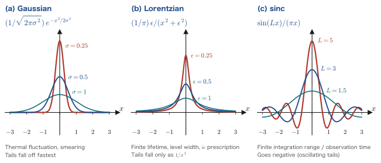
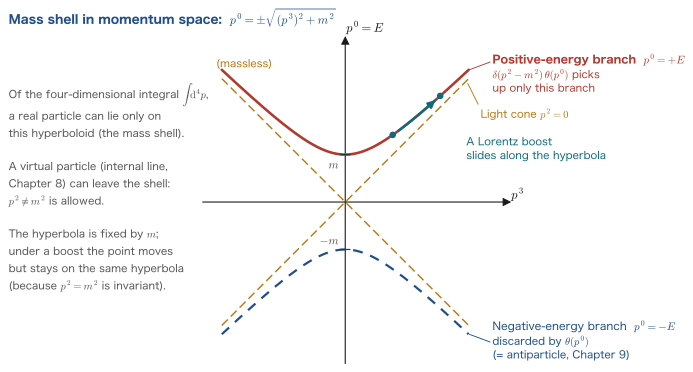
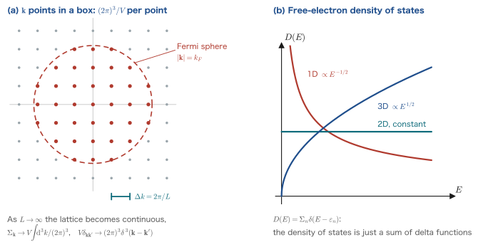
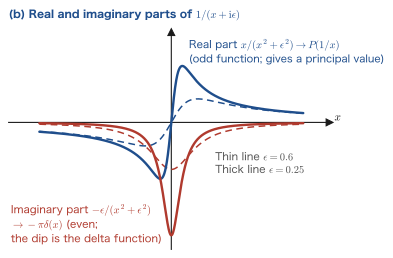
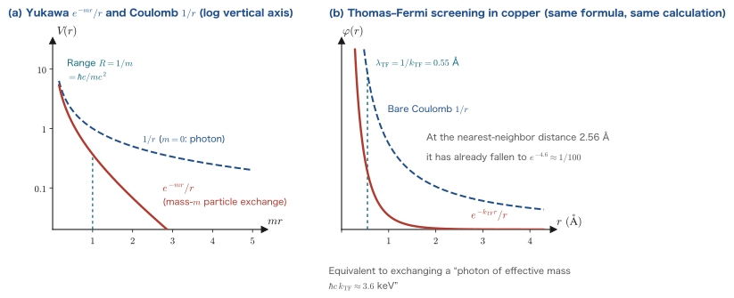

Appendix ADirac Delta Function and Normalization
From Chapter 8 onward, $\delta$ appears in the middle of almost every calculation in this book. Write down a scattering amplitude and out comes $(2\pi)^4\delta^4(p_A+p_B-\sum p_f)$; the denominator of a propagator carries a $+\ii\epsilon$, and the operation of sending that $\epsilon$ to zero produces a $\delta$. The normalization of states, $\braket{p|p'}=2E_p(2\pi)^3\delta^3(\pp-\pp')$, has a factor $2E$ sitting in it for some reason. These points are often skipped as “computational details,” but anyone who skips them will certainly be in trouble later: drop one factor of $2$ and the cross section is off by a factor of $4$; drop one $(2\pi)^3$ and the value is off by a factor of about $250$ (precisely, $(2\pi)^3=248.05$).
This appendix has two aims. The first is to assemble a complete toolbox of $\delta$-function techniques, with proofs. The second is to fix the conventions used in this book in one place. Where to put the $2\pi$ in the Fourier transform, and whether to include $2E$ in the phase-space element—these are matters of convention, not physics, but unless the convention is stated explicitly, you cannot tell what differs when you set a formula from another textbook beside your own. The convention tables placed in Sections A.3 and A.5 are referred to from every chapter of this book.
This appendix also has another, hidden aim. The tools lined up here do not belong to particle physics alone. A sum of $\delta$ functions is the density of states itself; the width $\eta$ of the Lorentzian representation is the very smearing width of first-principles calculations; the Sokhotski–Plemelj formula is the key to deriving the Kramers–Kronig relations; and the Fourier transform of $1/(q^2+m^2)$, which we compute completely in Section A.6, ties the Yukawa potential and Thomas–Fermi screening together in a single line. The mass $m$ that Yukawa gave to the meson and the Thomas–Fermi wave number $k_\mathrm{TF}$ in a metal are the same symbol sitting in the same place in the same integral. This is not an analogy; it is literally the same equation.
Accordingly, immediately after deriving the tool of each section, this appendix shows by an equation where it shows up in materials science. The $\delta$ function is the most basic language shared by particle physics and condensed matter physics.
- The definition of the $\delta$ function (as a functional), and proofs of the scaling rule $\delta(ax)=\delta(x)/\abs{a}$ and the composite-function rule $\delta(f(x))=\sum_i\delta(x-x_i)/\abs{f'(x_i)}$
- The three representations—Gaussian, Lorentzian, and sinc forms—and the physical situations in which each arises naturally
- The “squaring prescription” $\left[2\pi\delta(E)\right]^2=2\pi T\,\delta(E)$—the origin of decay rates and Fermi’s golden rule (used in Appendix B)
- $\delta^3$, $\delta^4$, $\nabla^2(1/r)=-4\pi\delta^3(\xx)$, and the mass-shell condition $\delta(p^2-m^2)\theta(p^0)$
- The Fourier-transform conventions of this book, box normalization $\sum_\kk\to V\!\int\!\dd^3k/(2\pi)^3$, and the density of states $D(E)=\sum_n\delta(E-\varepsilon_n)$
- Principal-value integrals and the Sokhotski–Plemelj formula $\dfrac{1}{x\pm\ii\epsilon}=\PV\dfrac{1}{x}\mp\ii\pi\delta(x)$, and their relation to Feynman’s $\ii\epsilon$ prescription
- Why $2E$ appears in the relativistic normalization (a direct proof that $E\,\delta^3(\pp-\pp')$ is Lorentz invariant), and the invariant phase-space element $\dd^3p/[(2\pi)^3 2E]$
- The complete calculation showing that the three-dimensional Fourier transform of $1/(\qq^2+m^2)$ is $\ee^{-mr}/(4\pi r)$ (the Yukawa potential of Chapter 8)
- Connections to materials science: the density of states and smearing, the retarded Green function and Kramers–Kronig, Thomas–Fermi screening, and Ewald summation
- A collection of formulas for Gaussian integrals, Feynman parameters, Euler’s Beta function, and the basic integrals of dimensional regularization
A.1 The One-Dimensional Delta Function
A.1.1 Not a “function” but a “symbol that has meaning only inside an integral”
In a 1927 paper Dirac introduced a quantity $\delta(x)$ with the following properties, and in his 1930 textbook “The Principles of Quantum Mechanics” he systematized it: it is zero for $x\neq0$, infinite at $x=0$, and yet its total integral is $1$. Read as an ordinary function, this is contradictory, because a function that is zero except at a single point integrates to zero in the sense of Lebesgue. Therefore $\delta$ is not a function. It must correctly be defined as a map from functions to numbers (a functional).
Definition: The Dirac delta function
$\delta(x)$ is a symbol that satisfies the following for any continuous function $f(x)$.
That is, $\delta(x-a)$ is “a device that receives $f$ and returns $f(a)$.” $\delta$ by itself has no meaning; it acquires meaning only when it sits inside an integral sign. In particular, setting $f(x)=1$ gives $\int\delta(x-a)\dd x=1$.
In mathematics, $\delta$ is an object called a distribution (a tempered distribution in the sense of Schwartz), and is defined rigorously as a continuous linear functional on the space $\mathcal{S}$ of rapidly decreasing functions. In physics it suffices to accept Eq. \eqref{eq:A-def} as a “rule of use.”
Caution: $\delta(x)^2$ has no meaning
Distributions cannot be multiplied together. $\delta(x)\cdot\delta(x)$ has no meaning, and the expression $\int f(x)\delta(x)^2\dd x$ is mathematically undefined. Yet in the calculations from Chapter 8 onward, squaring a scattering amplitude inevitably produces the form $\left[(2\pi)^4\delta^4(\cdots)\right]^2$. How to handle this is the subject of Section A.1.4, and the answer is “replace one of the $\delta$'s by the finite spacetime volume $VT$.” There we will examine carefully the mechanism by which an undefined quantity ends up giving a finite physical quantity (a decay rate or a cross section).
On the other hand, multiplying by a smooth function, as in $\delta(x)f(x)$, is no problem. $x\,\delta(x)=0$ and $f(x)\delta(x-a)=f(a)\delta(x-a)$ are both correct equalities (both sides agree when integrated against an arbitrary test function).
A.1.2 Basic properties and their proofs
Below, $f$ is sufficiently smooth and all integrals run from $-\infty$ to $\infty$. All the proofs are settled by a single strategy: “integrate both sides against a test function and show that they agree.”
Derivation 1: Evenness $\delta(-x)=\delta(x)$
Step 1: Integrate the left-hand side against a test function.
$$ \int_{-\infty}^{\infty} f(x)\,\delta(-x)\,\dd x $$Step 2: Change variables to $y=-x$. We have $\dd x=-\dd y$, and the integration range $x:-\infty\to\infty$ is mapped to $y:\infty\to-\infty$. Interchanging the upper and lower limits produces one more sign, and the two minus signs cancel.
$$ = \int_{\infty}^{-\infty} f(-y)\,\delta(y)\,(-\dd y) = \int_{-\infty}^{\infty} f(-y)\,\delta(y)\,\dd y = f(0) $$Step 3: Compare with the right-hand side. Since $\int f(x)\delta(x)\dd x=f(0)$, the two agree, and because this holds for arbitrary $f$, we have $\delta(-x)=\delta(x)$. $\blacksquare$
Derivation 2: Scaling rule $\delta(ax)=\dfrac{1}{\abs{a}}\delta(x)$ ($a\neq0$)
Step 1: The case $a>0$. Setting $y=ax$ gives $\dd x=\dd y/a$, and the orientation of the interval does not change.
$$ \int_{-\infty}^{\infty} f(x)\,\delta(ax)\,\dd x = \int_{-\infty}^{\infty} f\!\left(\frac{y}{a}\right)\delta(y)\,\frac{\dd y}{a} = \frac{1}{a}f(0) $$Step 2: The case $a<0$. With the same substitution, the $a$ in $\dd x=\dd y/a$ is negative, so the orientation of the interval is reversed. $x:-\infty\to\infty$ is mapped to $y:\infty\to-\infty$, and a minus sign appears when we restore the limits.
$$ = \int_{\infty}^{-\infty} f\!\left(\frac{y}{a}\right)\delta(y)\,\frac{\dd y}{a} = -\frac{1}{a}f(0) = \frac{1}{\abs{a}}f(0) $$Step 3: Combine the results. In both cases the result is $f(0)/\abs{a}$, so
holds. $\blacksquare$ This equation says that “$\delta$ has the dimension of an inverse length.” The dimension of $\delta(x)$ is $[x]^{-1}$, that of $\delta^3(\xx)$ is $[L]^{-3}$ ($L$ is a length), and that of $\delta^4(p)$ is $[E]^{-4}$ ($E$ is energy). Always use this when checking the correctness of an equation by dimensional analysis.
Derivation 3: Composite-function rule $\delta(f(x))=\displaystyle\sum_i \frac{\delta(x-x_i)}{\abs{f'(x_i)}}$
Here the $x_i$ are all the simple zeros ($f'(x_i)\neq0$) satisfying $f(x_i)=0$.
Step 1: Split into neighborhoods of the zeros. $\delta(f(x))$ takes nonzero values only near the points where $f(x)=0$. We therefore split the integral into a sum over small intervals $I_i=(x_i-\eta,\;x_i+\eta)$, each containing one zero $x_i$. Take $\eta$ small enough that the zeros do not run into one another.
$$ \int g(x)\,\delta(f(x))\,\dd x = \sum_i \int_{I_i} g(x)\,\delta(f(x))\,\dd x $$Step 2: Change variables to $u=f(x)$ in each interval. Since $f'(x_i)\neq0$, $f$ is monotonic on $I_i$, and the inverse function $x=f^{-1}(u)$ is uniquely determined. From $\dd u=f'(x)\dd x$ we get $\dd x=\dd u/f'(x)$. When $f'(x_i)<0$ the orientation of the interval is reversed, but if we absorb that into an absolute value (the same operation as in Derivation 2), then
$$ \int_{I_i} g(x)\,\delta(f(x))\,\dd x = \int_{f(I_i)} g\big(f^{-1}(u)\big)\,\delta(u)\,\frac{\dd u}{\abs{f'(f^{-1}(u))}} $$holds. The integration range $f(I_i)$ is the small interval from $f(x_i-\eta)$ to $f(x_i+\eta)$ that contains $u=0$ as an interior point (if $\eta$ is small its width is about $2\eta\abs{f'(x_i)}$, but since $\delta(u)$ looks only at the neighborhood of $u=0$, the endpoints do not affect the result).
Step 3: Use $\delta(u)$. Since $f^{-1}(0)=x_i$ at $u=0$,
$$ = \frac{g(x_i)}{\abs{f'(x_i)}} $$Step 4: Add up the contributions.
$\blacksquare$ Equation \eqref{eq:A-scale} is the special case $f(x)=ax$. When we treat the mass-shell condition $\delta(p^2-m^2)$ in Section A.2, this formula will play the leading role.
Example A.1: Practice with the composite-function rule
(a) $\delta(x^2-a^2)$ ($a>0$). The zeros are $x=\pm a$, and from $f'(x)=2x$ we get $\abs{f'(\pm a)}=2a$. Hence
$$ \delta(x^2-a^2) = \frac{1}{2a}\Big[\delta(x-a)+\delta(x+a)\Big] $$(b) $\delta(\sin x)$. The zeros are $x=n\pi$ ($n\in\mathbb{Z}$), and from $f'(x)=\cos x$ we get $\abs{\cos n\pi}=1$. Hence
$$ \delta(\sin x) = \sum_{n=-\infty}^{\infty}\delta(x-n\pi) $$(c) $\delta(\ee^{x}-1)$. The only zero is $x=0$, and $f'(0)=1$, so $\delta(\ee^x-1)=\delta(x)$.
(d) The rule cannot be used for a multiple root. For $\delta(x^2)$ we have $f'(0)=0$, so Eq. \eqref{eq:A-composite} breaks down; indeed, $\delta(x^2)$ is not defined.
There is also a rule for derivatives. $\delta'(x)$ is given meaning by adopting integration by parts as its “definition.”
Derivation 4: The derivative of the delta function
Step 1: Integrate by parts. We regard $\delta$ as vanishing at infinity (the test function also decreases rapidly at infinity) and discard the boundary term.
$$ \int_{-\infty}^{\infty} f(x)\,\delta'(x-a)\,\dd x = \Big[f(x)\delta(x-a)\Big]_{-\infty}^{\infty} - \int_{-\infty}^{\infty} f'(x)\,\delta(x-a)\,\dd x $$Step 2: Drop the boundary term and evaluate the second term.
Step 3: Derived formulas. Setting $f(x)=x g(x)$ in Eq. \eqref{eq:A-deriv}, for $n=1$ we get $-\left[xg(x)\right]'\big|_{0}=-g(0)$, so
$$ x\,\delta'(x) = -\delta(x) $$follows. Similarly, $x\,\delta(x)=0$ and $x^2\delta'(x)=0$. $\blacksquare$
Here is one more relation that we use frequently in this book. For the Heaviside step function
$$ \theta(x) = \begin{cases} 1 & (x>0)\\ 0 & (x<0)\end{cases} $$the derivative of $\theta$ is $\delta$:
$$ \begin{equation} \frac{\dd\theta(x)}{\dd x} = \delta(x) \label{eq:A-theta} \end{equation} $$The proof is a single integration by parts: $\int f\theta'\dd x=[f\theta]-\int f'\theta\,\dd x=-\int_0^\infty f'\dd x=f(0)$. The reason $\theta(t-t')$, which expresses causality, appears all over the equations is that the retarded Green function (the propagator of Chapter 8, and Chapter 1 of “Introduction to Linear Response Theory”) essentially has this structure.
A.1.3 The three representations
$\delta$ can be expressed as the limit of a sequence of ordinary functions with a parameter. Which representation to choose is decided by the physical situation.
Theorem: The three standard representations of the delta function
Each of the following three keeps $\int\delta_\lambda(x)\dd x=1$ while its width shrinks to zero, and becomes $\delta(x)$ in the limit.
$$ \begin{equation} \delta(x) = \lim_{\sigma\to0^+}\frac{1}{\sqrt{2\pi}\,\sigma}\,\ee^{-x^2/2\sigma^2} \qquad\text{(Gaussian form)} \label{eq:A-gauss} \end{equation} $$ $$ \begin{equation} \delta(x) = \lim_{\epsilon\to0^+}\frac{1}{\pi}\,\frac{\epsilon}{x^2+\epsilon^2} \qquad\text{(Lorentzian form)} \label{eq:A-lorentz} \end{equation} $$ $$ \begin{equation} \delta(x) = \lim_{L\to\infty}\frac{\sin(Lx)}{\pi x} = \lim_{L\to\infty}\frac{1}{2\pi}\int_{-L}^{L}\ee^{\ii k x}\,\dd k \qquad\text{(sinc form)} \label{eq:A-sinc} \end{equation} $$In each case the normalization can be checked from a known integral: $\int\ee^{-x^2/2\sigma^2}\dd x=\sqrt{2\pi}\sigma$, $\int\dd x\,\epsilon/(x^2+\epsilon^2)=\left[\arctan(x/\epsilon)\right]_{-\infty}^{\infty}=\pi$, and $\int_{-\infty}^{\infty}\frac{\sin u}{u}\dd u=\pi$.

Physical Meaning: The physics decides which representation to choose
The three representations are mathematically equivalent, but their physical origins are entirely different.
- The Gaussian form arises from the superposition of many independent small fluctuations (the central limit theorem). Detector resolution, thermal momentum distributions, and the Gaussian smearing of first-principles calculations are of this kind.
- The Lorentzian form arises from the Fourier transform of an amplitude that decays in time as $\ee^{-\Gamma t/2}$. The mass distribution of an unstable particle (Breit–Wigner; Section 8.7.4 of Chapter 8 and Section B.4 of Appendix B), the natural width of an atomic level, and the $\ii\eta$ of a Green function are all of this kind.
- The sinc form arises from the superposition of plane waves over a finite interval. Observation over a finite time $T$, a box of finite volume $V$, and the Laue function for diffraction by a crystal of finite size are of this kind.
The meaning of the “width” is also different. In the Gaussian form $\sigma$ is the resolution; in the Lorentzian form $\epsilon$ is the half width at half maximum (HWHM) $\Gamma/2=1/(2\tau)$ ($\Gamma=1/\tau$ is the inverse of the lifetime); and in the sinc form $1/L$ is the inverse of the observation time or the sample size. Even though all converge to the same $\delta$, the physical interpretations of the width left finite along the way are not interchangeable.
A.1.4 The squaring prescription for $\delta$: $[2\pi\delta(E)]^2 = 2\pi T\,\delta(E)$
The probability of scattering is the square of the absolute value of the amplitude. The amplitude carries the $\delta$ of energy conservation, so squaring it produces the square of $\delta$. As stated in Section A.1.1, this is an undefined quantity. The physically correct prescription is to let the interaction act for only a finite time $T$ from the start, and take $T\to\infty$ at the end.
Derivation 5: Replacing the square of $\delta$ by the time $T$
Step 1: Define a finite-time $\delta$. If the interaction acts only during $-T/2<t<T/2$, what comes out of the time integral is not the full $\delta$ but
$$ \delta_T(E) \equiv \frac{1}{2\pi}\int_{-T/2}^{T/2}\ee^{\ii E t}\,\dd t = \frac{1}{2\pi}\cdot\frac{\ee^{\ii ET/2}-\ee^{-\ii ET/2}}{\ii E} = \frac{1}{\pi}\frac{\sin(ET/2)}{E} $$This is precisely the sinc-form representation of Eq. \eqref{eq:A-sinc} with $L=T/2$, and it converges to $\delta(E)$ as $T\to\infty$.
Step 2: Square it.
$$ \big[2\pi\,\delta_T(E)\big]^2 = \left(\frac{2\sin(ET/2)}{E}\right)^2 = \frac{4\sin^2(ET/2)}{E^2} $$Step 3: Determine how many times $\delta$ this is by computing the area. As $T\to\infty$ this function concentrates sharply at $E=0$. We therefore compute its total integral. Using the formula $\int_{-\infty}^{\infty}\frac{\sin^2(au)}{u^2}\dd u=\pi a$ ($a>0$) with $a=T/2$ and $u=E$, we obtain
$$ \int_{-\infty}^{\infty}\frac{4\sin^2(ET/2)}{E^2}\,\dd E = 4\cdot\pi\cdot\frac{T}{2} = 2\pi T $$Step 4: Conclusion. A function with area $2\pi T$ concentrated at $E=0$ is nothing other than $2\pi T\,\delta(E)$. That is,
$\blacksquare$ The same argument applies to the spatial directions: for each direction a box length $L$ appears, and in three dimensions the volume $V=L^3$ appears.
Physical Meaning: Dividing out the infinity by “per unit time”
On the right-hand side of Eq. \eqref{eq:A-delta-sq}, a factor $T$ (or $VT$) remains. It is only natural that a transition probability grows in proportion to the observation time. Hence the physically meaningful quantity is not the probability itself but the probability per unit time and unit volume, that is, the transition rate.
$$ \text{transition rate} = \frac{\abs{\mathcal{M}}^2\,VT\,(2\pi)^4\delta^4(\textstyle\sum p)}{VT} = \abs{\mathcal{M}}^2\,(2\pi)^4\delta^4\big(\textstyle\sum p\big) $$The factor $VT$ drops out cleanly. This is the skeleton of the formulas for the decay rate $\Gamma$ and the cross section $\sigma$ in Appendix B. Fermi’s golden rule, which one learns in nonrelativistic quantum mechanics,
$$ w_{i\to f} = 2\pi\abs{\bra{f}\hat{V}\ket{i}}^2\,\delta(E_f-E_i) $$also follows from exactly the same derivation (evaluating $\abs{\int_0^T\ee^{\ii\omega t}\dd t}^2$ at first order in time-dependent perturbation theory). It is no accident that the cross-section formulas of particle physics and the formulas for electron-phonon scattering rates and optical absorption rates in solids have the same form. Both use Eq. \eqref{eq:A-delta-sq}.
A.2 The Three- and Four-Dimensional Delta Functions
A.2.1 The three-dimensional delta function
In three dimensions, we define it as the product of $\delta$ functions for the individual components.
Definition: $\delta^3$ and its expression in general coordinates
$$ \begin{equation} \delta^3(\xx-\xx') \equiv \delta(x-x')\,\delta(y-y')\,\delta(z-z'), \qquad \int \dd^3x\; f(\xx)\,\delta^3(\xx-\xx') = f(\xx') \label{eq:A-delta3} \end{equation} $$In coordinates other than Cartesian, one must pay attention to the Jacobian. When the volume element can be written as $\dd^3x=J\,\dd u_1\dd u_2\dd u_3$ in coordinates $(u_1,u_2,u_3)$, reproducing the right-hand side of Eq. \eqref{eq:A-delta3} requires
$$ \delta^3(\xx-\xx') = \frac{1}{J}\,\delta(u_1-u_1')\,\delta(u_2-u_2')\,\delta(u_3-u_3') $$In polar coordinates, where $J=r^2\sin\theta$, this becomes
$$ \begin{equation} \delta^3(\xx-\xx') = \frac{1}{r^2\sin\theta}\,\delta(r-r')\,\delta(\theta-\theta')\,\delta(\phi-\phi') = \frac{1}{r^2}\,\delta(r-r')\,\delta(\cos\theta-\cos\theta')\,\delta(\phi-\phi') \label{eq:A-delta3-polar} \end{equation} $$(we used $\delta(\cos\theta-\cos\theta')=\delta(\theta-\theta')/\sin\theta$ from Eq. \eqref{eq:A-composite}).
The following relation is the property of $\delta^3$ that we use most often in this book. The Yukawa potential in Chapter 8, the Coulomb field in Chapter 10, and the Fourier transform in Section A.6 all rely on it.
Derivation 6: $\nabla^2\dfrac{1}{r} = -4\pi\,\delta^3(\xx)$
Step 1: Show that it vanishes away from the origin. Let $r=\abs{\xx}$. Since $\nabla r=\hat{\bm r}$,
$$ \nabla\frac{1}{r} = -\frac{1}{r^2}\hat{\bm r} $$Using the Laplacian in polar coordinates, $\nabla^2 g(r)=\frac{1}{r^2}\frac{\dd}{\dd r}\!\left(r^2\frac{\dd g}{\dd r}\right)$, we obtain for $r\neq0$
$$ \nabla^2\frac{1}{r} = \frac{1}{r^2}\frac{\dd}{\dd r}\left(r^2\cdot\left(-\frac{1}{r^2}\right)\right) = \frac{1}{r^2}\frac{\dd}{\dd r}(-1) = 0 $$That is, it vanishes everywhere except at the origin. Therefore we know that the right-hand side is proportional to $\delta^3$.
Step 2: Fix the proportionality coefficient by integrating over a ball containing the origin. Integrate over a ball $B_R$ of radius $R$ and convert to a surface integral with Gauss’s divergence theorem.
$$ \int_{B_R}\nabla^2\frac{1}{r}\,\dd^3x = \oint_{S_R}\left(\nabla\frac{1}{r}\right)\cdot\dd\bm{S} = \oint_{S_R}\left(-\frac{1}{R^2}\hat{\bm r}\right)\cdot\left(\hat{\bm r}\,R^2\,\dd\Omega\right) $$Step 3: Carry out the surface integral. Since $\hat{\bm r}\cdot\hat{\bm r}=1$, the $R^2$ cancels, and only the solid-angle integral remains.
$$ = -\int \dd\Omega = -4\pi $$It does not depend on $R$. That is, all the weight is concentrated at the origin.
Step 4: Conclusion. Since it vanishes away from the origin and its total integral is $-4\pi$,
$\blacksquare$ The form on the right reads, “$1/(4\pi r)$ is the Green function of the Laplace operator.” The reason the Coulomb potential of a point charge is proportional to $1/r$ is this single line.
A.2.2 The four-dimensional delta function and momentum conservation
For the four-momentum $p^\mu=(E,\pp)$, we define
$$ \begin{equation} \delta^4(p) \equiv \delta(p^0)\,\delta^3(\pp) = \delta(E)\,\delta(p_x)\,\delta(p_y)\,\delta(p_z) \label{eq:A-delta4} \end{equation} $$The important point is that $\delta^4$ is Lorentz invariant. The reason is simple: the Jacobian of a Lorentz transformation $p'^\mu=\Lambda^\mu_{\ \nu}p^\nu$ is $\abs{\det\Lambda}=1$ (here $\Lambda$ is a proper Lorentz transformation with $\det=+1$), and therefore $\dd^4p'=\dd^4p$ holds. By the four-dimensional version of Eq. \eqref{eq:A-scale}, if $\dd^4p$ is invariant, then $\delta^4(p)$ is also invariant. On the other hand, $\dd^3p$ is not invariant, and neither is $\delta^3(\pp)$. This asymmetry produces the $2E$ factor of Section A.5.
Derivation 7: Where does $(2\pi)^4\delta^4\!\left(\sum p\right)$ come from?
Step 1: The interaction occurs at every point of spacetime. In the Feynman rules of Chapter 8, the interaction Hamiltonian (or the Lagrangian density) is integrated over all of spacetime. Representing an incoming particle by $\ee^{-\ii p\cdot x}$ and an outgoing particle by $\ee^{+\ii p'\cdot x}$, each vertex yields an integral of the following form.
$$ \int \dd^4x\;\ee^{-\ii(p_1+p_2+\cdots-p_1'-p_2'-\cdots)\cdot x} $$Here $p\cdot x = Et-\pp\cdot\xx$ (with the metric $g^{\mu\nu}=\mathrm{diag}(1,-1,-1,-1)$).
Step 2: Use the sinc-form representation for each component. We apply the second form of Eq. \eqref{eq:A-sinc}, $\int_{-\infty}^{\infty}\dd t\,\ee^{\ii\omega t}=2\pi\delta(\omega)$, to all four components.
$$ \int \dd^4x\;\ee^{-\ii q\cdot x} = (2\pi)^4\,\delta^4(q), \qquad q^\mu \equiv \sum_\text{in} p^\mu - \sum_\text{out} p^\mu $$Since $\delta^4$ is an even function ($\delta^4(-q)=\delta^4(q)$), the sign of the exponent does not affect the result.
Step 3: Read off the meaning. Hence every scattering amplitude carries the factor
This is nothing other than energy-momentum conservation. $\blacksquare$
As the derivation shows, the only reason this factor appeared is that “the interaction has the same form at every point of spacetime.” That is, spacetime translation invariance. Noether’s theorem, which we saw in Chapter 5—a continuous symmetry produces a conservation law—is embedded directly in the calculation in the form of the $\delta$ function.
Connection to Materials Science: In a crystal, $\delta^3$ becomes a “comb” (the Laue condition)
What happens if we replace the logic of Derivation 7 by discrete translation invariance instead of continuous translation invariance? A crystal is invariant only under translations by lattice vectors $\bm{R}$. The spatial integral then splits into an integral over the unit cell and a sum over lattice points.
$$ \int_\text{crystal}\dd^3x\;\ee^{\ii\qq\cdot\xx} = \left(\int_\text{cell}\dd^3x\;\ee^{\ii\qq\cdot\xx}\right)\sum_{\bm R}\ee^{\ii\qq\cdot\bm R} $$By the Poisson summation formula, this lattice sum becomes a comb of $\delta$ functions:
Here $\bm{G}$ is a reciprocal lattice vector and $v_\text{cell}$ is the volume of the unit cell. Whereas Eq. \eqref{eq:A-momcons} says “momentum is conserved exactly,” Eq. \eqref{eq:A-poisson} says “momentum is conserved up to a reciprocal lattice vector.” That is, $\qq_\text{in}-\qq_\text{out}=\bm{G}$.
This is exactly the Laue condition of X-ray diffraction, and it is the momentum-space expression of Bragg’s law $2d\sin\theta=n\lambda$. It is also the reason why the Umklapp process (the terms with $\bm{G}\neq0$) in phonon-phonon scattering makes the lattice thermal conductivity finite (Peierls), and why the Umklapp process in electron-phonon scattering contributes to the electrical resistance of metals. In particle physics, the symmetry is continuous, so only the $\bm{G}=0$ term exists. The vacuum is not a “crystal with lattice constant zero” but a “crystal with continuous translations.”
In an actual diffraction experiment, the crystal has a finite size $N_1\times N_2\times N_3$, so the $\delta^3$ in Eq. \eqref{eq:A-poisson} is not a perfect $\delta$ but takes the sinc form of Figure A.1(c) (more precisely, its square, the Laue function $\sin^2(N q a/2)/\sin^2(qa/2)$). The Scherrer formula, which gives the crystallite size from the width of a diffraction peak, merely uses the fact that the width of this sinc is $\propto 1/(Na)$. It is exactly the same mathematics as the statement in Section A.1.4 that “a finite $T$ produces a peak width $1/T$.”
A.2.3 The mass-shell condition $\delta(p^2-m^2)$
A relativistic particle satisfies $p^2=E^2-\abs{\pp}^2=m^2$. The set of points in four-dimensional momentum space that satisfy this condition is called the mass shell. The function $\delta(p^2-m^2)$ is a measure that “picks out only points on the mass shell within four-dimensional space.” Using the composite-function rule, Eq. \eqref{eq:A-composite}, we can rewrite it as a $\delta$ in $E$.
Derivation 8: $\delta(p^2-m^2)\,\theta(p^0) = \dfrac{1}{2E_p}\,\delta(p^0-E_p)$
Step 1: View it as a function of $p^0$. Fixing $\pp$,
$$ f(p^0) = p^2-m^2 = (p^0)^2 - \abs{\pp}^2 - m^2 = (p^0)^2 - E_p^2, \qquad E_p \equiv \sqrt{\abs{\pp}^2+m^2}\;(>0) $$Step 2: Find the zeros and the derivative. There are two zeros, $p^0=\pm E_p$. Since $f'(p^0)=2p^0$, we have $\abs{f'(\pm E_p)}=2E_p$.
Step 3: Apply Eq. \eqref{eq:A-composite}.
$$ \delta(p^2-m^2) = \frac{1}{2E_p}\Big[\delta(p^0-E_p) + \delta(p^0+E_p)\Big] $$Step 4: Select only the positive-energy branch. Multiplying by the step function $\theta(p^0)$ eliminates the second term.
Step 5: Reduce the four-dimensional integral to a three-dimensional one. Integrating both sides over $\dd^4p$, the $p^0$ integral is disposed of by the $\delta$, giving
$\blacksquare$ The left-hand side is manifestly Lorentz invariant ($\dd^4p$ is invariant, $p^2-m^2$ is a scalar, and $\theta(p^0)$ is also invariant, because a proper orthochronous Lorentz transformation, with $\det\Lambda=+1$ and $\Lambda^0{}_0\ge1$, preserves the direction of time). Therefore $\dd^3p/2E_p$ on the right-hand side is also Lorentz invariant. This is the fundamental reason why $2E$ appears in Section A.5, and it may be the most important line in this appendix.

Caution: Do not forget to write $\theta(p^0)$
$\delta(p^2-m^2)$ alone also picks up the negative-energy branch. As we will see in Chapter 9, negative-energy solutions are reinterpreted as antiparticles, so we cannot simply discard them; but in a phase-space integral that counts “real particles emerging in the final state,” particles and antiparticles are treated as distinct external lines with distinct four-momenta. Therefore it is correct to impose $\theta(p^0)$ on each external line. Some references use the notation $\delta^+(p^2-m^2)\equiv\delta(p^2-m^2)\theta(p^0)$.
A.3 Fourier Transforms and the Delta Function
A.3.1 Conventions in this book
There are several conventions for where to put the $2\pi$ in a Fourier transform. All of them are physically equivalent, but mixing them always leads to accidents. In this book we adopt the standard of field theory (the same as Peskin–Schroeder). That is, all the $2\pi$ factors are attached to the momentum integral.
Definition: The Fourier transform convention of this book
Three-dimensional:
Four-dimensional ($k\cdot x = k^0x^0-\kk\cdot\xx$):
$$ \begin{equation} f(x) = \int\frac{\dd^4k}{(2\pi)^4}\;\tilde f(k)\,\ee^{-\ii k\cdot x}, \qquad \tilde f(k) = \int \dd^4x\; f(x)\,\ee^{+\ii k\cdot x} \label{eq:A-fourier4} \end{equation} $$Under this convention, two completeness relations hold.
The proof just lines up Eq. \eqref{eq:A-sinc} for the three components. It is worth checking that the two equations are inverse to each other: substitute the right-hand equation of Eq. \eqref{eq:A-fourier3} into the left one and use the first relation of Eq. \eqref{eq:A-completeness} (the $\kk$ integral), and it closes as $f(\xx)=\int\dd^3x'\,f(\xx')\delta^3(\xx-\xx')=f(\xx)$. Conversely, when the left equation is substituted into the right one, the second relation (the $\xx$ integral) comes into play this time, and it closes as $\tilde f(\kk)=\tilde f(\kk)$.
Caution: Correspondence with the conventions of other books
In mathematics and signal processing the symmetric convention $f(x)=\frac{1}{\sqrt{2\pi}}\int \tilde f(k)\ee^{\ii kx}\dd k$ is used, and in solid-state physics the convention of dividing by the box volume $V$, $f(\xx)=\frac{1}{V}\sum_\kk \tilde f(\kk)\ee^{\ii\kk\cdot\xx}$, is common. The relations to be converted are as follows ($V=L^3$, periodic boundary conditions).
| Quantity | This book (continuum, field theory) | Solid-state physics (box, discrete) | Mathematics (symmetric) |
|---|---|---|---|
| Inverse transform | $\displaystyle\int\frac{\dd^3k}{(2\pi)^3}$ | $\displaystyle\frac{1}{V}\sum_\kk$ | $\displaystyle\frac{1}{(2\pi)^{3/2}}\int\dd^3k$ |
| Forward transform | $\displaystyle\int\dd^3x$ | $\displaystyle\int_V\dd^3x$ | $\displaystyle\frac{1}{(2\pi)^{3/2}}\int\dd^3x$ |
| Completeness: value of the $\xx$ integral | $(2\pi)^3\delta^3(\kk-\kk')$ | $V\delta_{\kk\kk'}$ | $(2\pi)^3\delta^3(\kk-\kk')$ (with the prefactor $(2\pi)^{-3}$ attached, giving $\delta^3$) |
| Completeness: value of the $\kk$ sum or integral | $\delta^3(\xx-\xx')$ | $\delta^3(\xx-\xx')$ (inside the box; in general $\sum_{\bm R}\delta^3(\xx-\xx'-\bm R)$) | $\delta^3(\xx-\xx')$ |
| Parseval | $\displaystyle\int\abs{f}^2\dd^3x=\int\frac{\dd^3k}{(2\pi)^3}\abs{\tilde f}^2$ | $\displaystyle\int_V\abs{f}^2\dd^3x=\frac1V\sum_\kk\abs{\tilde f}^2$ | $\displaystyle\int\abs{f}^2\dd^3x=\int\abs{\tilde f}^2\dd^3k$ |
The lower two rows are the same distribution identities in every convention ($\int\dd^3x\,\ee^{\ii(\kk-\kk')\cdot\xx}=(2\pi)^3\delta^3(\kk-\kk')$ and its wave-number counterpart), rewritten with each convention’s prefactors. The difference between conventions is concentrated in the upper two rows—on which side one puts $(2\pi)^3$ or $1/V$. When copying a formula from another book, first check that book’s prefactor of the inverse transform. A single mistake of $(2\pi)^3$ shifts the result by a factor of about $250$ (a factor of $(2\pi)^3=248.05$).
A.3.2 Discrete sums in a box and the continuum limit
Field-theory calculations often start by “imposing periodic boundary conditions on a box of side $L$.” This discretizes the wave numbers, turns the $\delta$ function into a Kronecker delta, and makes divergences easy to see. At the end we take $L\to\infty$. Here we build a dictionary for making this back-and-forth precise.
Derivation 9: From discrete sums to continuous integrals
Step 1: Count the allowed wave numbers. Imposing the periodic boundary condition $\psi(\xx+L\hat{\bm e}_i)=\psi(\xx)$ on the plane wave $\ee^{\ii\kk\cdot\xx}$ gives $\ee^{\ii k_iL}=1$, that is,
$$ \kk = \frac{2\pi}{L}\,(n_1,n_2,n_3), \qquad n_i\in\mathbb{Z} $$In wave-number space, the allowed points form a cubic lattice of side $2\pi/L$. The volume of wave-number space occupied by one $\kk$ point is $(2\pi/L)^3=(2\pi)^3/V$.
Step 2: Check orthogonality. Integrating over the box with $\kk-\kk'=2\pi\bm{n}/L$, for $\bm n\neq0$ each component gives $\int_0^L\ee^{2\pi\ii n x/L}\dd x=0$, and for $\bm n=0$ the result is $V$.
$$ \begin{equation} \frac{1}{V}\int_V \dd^3x\;\ee^{\ii(\kk-\kk')\cdot\xx} = \delta_{\kk\kk'} \label{eq:A-kronecker} \end{equation} $$Step 3: Turn the sum into an integral. The sum of a function $g(\kk)$ that is smooth in $\kk$ can be regarded as a Riemann sum in which each point represents the volume $(2\pi)^3/V$.
$$ \sum_\kk g(\kk) = \sum_\kk g(\kk)\cdot\frac{(2\pi)^3/V}{(2\pi)^3/V} \;\xrightarrow[L\to\infty]{}\; \frac{V}{(2\pi)^3}\int \dd^3k\; g(\kk) $$Step 4: Obtain the correspondence between Kronecker and Dirac. Letting $V\to\infty$ in Eq. \eqref{eq:A-kronecker}, the left-hand side becomes $\frac{1}{V}(2\pi)^3\delta^3(\kk-\kk')$. Therefore
$\blacksquare$ Equations \eqref{eq:A-sum2int} and \eqref{eq:A-kron2dirac} are consistent with each other: substituting Eqs. \eqref{eq:A-sum2int} and \eqref{eq:A-kron2dirac} into both sides of $\sum_{\kk'}\delta_{\kk\kk'}=1$ gives $\frac{V}{(2\pi)^3}\int\dd^3k'\frac{(2\pi)^3}{V}\delta^3(\kk-\kk')=1$, which indeed holds.
Physical Meaning: $V$ always cancels in the end
When we calculate with box normalization, many factors of $V$ appear in the intermediate expressions, which can be unsettling. But in physical quantities they always cancel. The rule is simple: each external line contributes a factor $1/\sqrt{V}$ (relativistically, $1/\sqrt{2EV}$) from the normalization factor of its wave function, and the phase-space sum $\sum_{\pp}$ contributes a factor $V$. For a cross section with two incident particles and $n$ final-state particles,
$$ \underbrace{\left(\frac{1}{V}\right)^{2+n}}_{\text{normalization}}\times \underbrace{V^n}_{\text{sum over final states}}\times \underbrace{V}_{\delta^4\text{ squared}}\times \underbrace{V}_{\text{incident flux}\propto 1/V} = V^0 $$they cancel in this way. In Appendix B we actually carry out this counting. It can be used as an indicator: “if a $V$ is left over, the calculation is wrong.” In particle physics the box is a computational convenience, but in condensed matter physics the box is a real sample, and quantities in which $V$ remains (the total electron number $N$, the total number of states) also have meaning—this difference reflects the difference in the objects treated, not a difference in mathematics.
A.3.3 Density of states: A sum of delta functions
The density of states (DOS) of a system with a discrete spectrum $\{\varepsilon_n\}$ is defined as a sum of $\delta$ functions.
Definition: Density of states
From this definition, $\int_{E_1}^{E_2}D(E)\dd E$ equals the number of states in the interval $[E_1,E_2]$. Also, the total sum of any one-body quantity $A$ can be written as $\sum_n A(\varepsilon_n) = \int A(E)D(E)\dd E$. That is, $D(E)$ is “all the information needed to compute quantities determined by the energy alone.”
Derivation 10: Density of states of the free electron gas
Step 1: Turn the sum into an integral. With $\varepsilon_\kk=\hbar^2\abs{\kk}^2/2m$, use Eq. \eqref{eq:A-sum2int}, including the spin degrees of freedom $2$.
$$ D(E) = 2\sum_\kk\delta(E-\varepsilon_\kk) = \frac{2V}{(2\pi)^3}\int\dd^3k\;\delta(E-\varepsilon_\kk) $$Step 2: Carry out the angular integration. Since $\varepsilon_\kk$ depends only on $\abs{\kk}$, $\int\dd^3k=4\pi\int_0^\infty k^2\dd k$.
$$ = \frac{2V}{(2\pi)^3}\cdot4\pi\int_0^\infty k^2\,\delta\!\left(E-\frac{\hbar^2k^2}{2m}\right)\dd k = \frac{V}{\pi^2}\int_0^\infty k^2\,\delta\!\left(E-\frac{\hbar^2k^2}{2m}\right)\dd k $$Step 3: Use the composite-function rule, Eq. \eqref{eq:A-composite}. The zero of $f(k)=E-\hbar^2k^2/2m$ with $k>0$ is $k_0=\sqrt{2mE}/\hbar$, and $\abs{f'(k_0)}=\hbar^2k_0/m$.
$$ = \frac{V}{\pi^2}\cdot\frac{k_0^2\,m}{\hbar^2 k_0} = \frac{V}{\pi^2}\frac{m k_0}{\hbar^2} = \frac{V}{\pi^2}\frac{m\sqrt{2mE}}{\hbar^3} $$Step 4: Tidy up.
Step 5: The same procedure works in lower dimensions. In two dimensions $\int\dd^2k=2\pi\int k\,\dd k$, which has one factor of $k$; in one dimension it is $\int\dd k$, which has zero factors of $k$. Hence
$$ D_{2\mathrm{D}}(E) = \frac{Am}{\pi\hbar^2}\;(\text{const.}), \qquad D_{1\mathrm{D}}(E) = \frac{L}{\pi\hbar}\sqrt{\frac{2m}{E}}\;\propto\;\frac{1}{\sqrt E} $$$\blacksquare$ The lower the dimension, the more the states gather on the low-energy side. In one dimension the density of states diverges as $E\to0$ (the van Hove singularity). This is why sharp peaks stand out in the optical absorption spectra of quantum wires and carbon nanotubes.
For a more general band $\varepsilon_n(\kk)$, the standard approach is to rewrite $\delta$ as a surface integral over the constant-energy surface. It suffices to apply Eq. \eqref{eq:A-composite} in the “direction perpendicular to the constant-energy surface in $\kk$ space.” Here $n$ is taken to be the band index including spin (if a spin-degenerate band is counted as a single band, multiply the right-hand side by a factor of $2$; then it agrees with $D_{3\mathrm{D}}$ of Derivation 10).
The denominator $\abs{\nabla_\kk\varepsilon}$ is proportional to the group velocity $\vv=\nabla_\kk\varepsilon/\hbar$. Therefore $D(E)$ has a singularity where the band is flat ($\nabla_\kk\varepsilon=0$). This is the van Hove singularity, and it plays a leading role in many corners of materials science: the peaks of the phonon density of states, the Stoner criterion for magnetism $I\,D_\sigma(E_F)>1$ ($D_\sigma$ is the density of states per spin component and per atom; if $D$ includes both spins, $D_\sigma=D/2$), and “flat-band engineering” for raising the superconducting $T_c$.

Connection to Materials Science: Smearing means choosing a representation of $\delta$
When we compute the density of states or the total energy of a metal in a first-principles calculation, we approximate the Brillouin-zone integral by a sum over a finite number of $\kk$ points. Then the $\delta$ in Eq. \eqref{eq:A-dos} becomes a “set of spikes” that takes values only at a finite number of points, and numerical integration cannot be done as it stands. So we replace $\delta$ by a function $\tilde\delta_\sigma$ of finite width $\sigma$. This is smearing.
$$ D(E) = \frac{1}{N_\kk}\sum_{n\kk} \tilde\delta_\sigma\big(E-\varepsilon_{n\kk}\big) $$The $\tilde\delta_\sigma$ chosen here are exactly the ones listed in Section A.1.3.
| Name | $\tilde\delta_\sigma(x)$ | Correspondence with Section A.1.3 | Usage |
|---|---|---|---|
| Gaussian smearing | $\dfrac{1}{\sqrt\pi\,\sigma}\ee^{-x^2/\sigma^2}$ | Gaussian form, Eq. \eqref{eq:A-gauss} (but this $\sigma$ is the width in the VASP and Quantum ESPRESSO convention, which is $\sqrt2$ times the standard deviation in Eq. \eqref{eq:A-gauss}. The standard deviation is $\sigma/\sqrt2$) | Plotting the DOS; semiconductors and molecules |
| Lorentzian broadening | $\dfrac{1}{\pi}\dfrac{\eta}{x^2+\eta^2}$ | Lorentzian form, Eq. \eqref{eq:A-lorentz} | Green function methods, spectral functions |
| Fermi–Dirac smearing | $-\dfrac{\partial f}{\partial E}=\dfrac{1}{4k_BT}\mathrm{sech}^2\dfrac{x}{2k_BT}$ | — (the physics of finite temperature itself) | Metals; $\sigma=k_BT$ has a physical meaning |
| Methfessel–Paxton | Gaussian corrected by Hermite polynomials | Higher-order refinement of the Gaussian form | Total energy of metals; makes the $\sigma$ dependence $O(\sigma^4)$ |
| Tetrahedron method | Linearly interpolate $\varepsilon(\kk)$ inside each tetrahedron and integrate $\delta$ exactly | Direct evaluation of Eq. \eqref{eq:A-dos-surface} | Precise calculations of the DOS, the dielectric function, and the Fermi surface |
What we want to emphasize here is that the choice of the smearing width $\sigma$ is a matter of physical judgment, not numerical convenience. The $\sigma=k_BT$ of Fermi–Dirac smearing is a real temperature, so $\sigma\to0$ is not necessarily “correct.” On the other hand, the $\sigma$ of Gaussian smearing is a purely numerical parameter, so an extrapolation of the total energy to $\sigma\to0$ is necessary. The caution in Section A.1.3 that “the three representations are mathematically equivalent but differ in physical origin” carries over directly into a caution for computational practice.
Moreover, the same problem arises on the particle-physics side. The mass distribution of an unstable particle is essentially Lorentzian (Breit–Wigner), but the detector resolution is Gaussian. The spectrum measured in an experiment is a convolution of the two (a Voigt function). To determine the $Z$ boson mass $m_Z=91.188\ \mathrm{GeV}$ with a precision of $2\ \mathrm{MeV}$, one must separate the physical width $\Gamma_Z=2.495\ \mathrm{GeV}$ from the width of the apparatus. The demand to “distinguish the origins of widths” is the same in accelerator experiments and in first-principles calculations.
A.4 Principal-Value Integrals and the Sokhotski–Plemelj Formula
A.4.1 Principal-value integrals
The integral $\int_{-1}^{1}\dd x/x$ diverges. However, since the integrand is an odd function, if we approach symmetrically from the left and right of $x=0$, the positive and negative parts should cancel and leave a finite value. This prescription of “cutting out symmetrically” is called the principal-value integral.
Definition: Cauchy principal-value integral
The key point is to take the same $\eta$ for the excised widths on the left and right. If $f$ is differentiable in a neighborhood of $x=c$, this limit exists. Indeed, expanding $f(x)=f(c)+f'(c)(x-c)+\cdots$, the term in $f(c)$ is an odd function and therefore cancels exactly over a symmetric interval, while the remainder has no singularity.
A.4.2 The Sokhotski–Plemelj formula
The protagonist of this section is the following formula. In particle physics it is the content of Feynman’s $\ii\epsilon$ prescription, and in condensed matter physics it is the hinge connecting causality and the spectral representation.
Theorem: Sokhotski–Plemelj formula
Both sides are distributions, and they acquire meaning only when integrated against a test function. That is, the claim is that for any smooth $f$
$$ \lim_{\epsilon\to0^+}\int_{-\infty}^{\infty}\frac{f(x)}{x\pm\ii\epsilon}\,\dd x = \PV\!\int_{-\infty}^{\infty}\frac{f(x)}{x}\,\dd x \;\mp\; \ii\pi f(0) $$holds.
Derivation 11: The Sokhotski–Plemelj formula (by separating real and imaginary parts)
Step 1: Make the denominator real. Multiply the numerator and denominator by the complex conjugate of the denominator.
$$ \frac{1}{x\pm\ii\epsilon} = \frac{x\mp\ii\epsilon}{(x\pm\ii\epsilon)(x\mp\ii\epsilon)} = \frac{x}{x^2+\epsilon^2} \;\mp\; \ii\,\frac{\epsilon}{x^2+\epsilon^2} $$The real and imaginary parts are now completely separated. Below we examine the limit $\epsilon\to0^+$ of each.
Step 2: The imaginary part is a Lorentzian representation. Using Eq. \eqref{eq:A-lorentz} as it stands, we have
$$ \frac{\epsilon}{x^2+\epsilon^2} = \pi\cdot\frac{1}{\pi}\frac{\epsilon}{x^2+\epsilon^2} \;\xrightarrow[\epsilon\to0^+]{}\; \pi\,\delta(x) $$Therefore the imaginary part becomes $\mp\ii\pi\delta(x)$. This is exactly what the three curves in Figure A.1(b) show: as $\epsilon$ is made smaller they become sharper (the red one, $\epsilon=0.25$, being the sharpest).
Step 3: Show that the real part becomes the principal value (first half). What we want to show is
$$ \lim_{\epsilon\to0^+}\int_{-\infty}^{\infty}\frac{x\,f(x)}{x^2+\epsilon^2}\,\dd x = \PV\!\int_{-\infty}^{\infty}\frac{f(x)}{x}\,\dd x $$Take a small $\eta>0$ and split the integral into $\abs{x}>\eta$ and $\abs{x}<\eta$. In the outer region $\abs{x}>\eta$ the integrand converges uniformly to $f(x)/x$ as $\epsilon\to0$, so it coincides directly with the outer part of the definition of the principal value, Eq. \eqref{eq:A-pv}.
Step 4: Show that the real part becomes the principal value (second half, the inner contribution). In the inner region $\abs{x}<\eta$, split $f(x)=f(0)+\left[f(x)-f(0)\right]$. The contribution of the first term is
$$ f(0)\int_{-\eta}^{\eta}\frac{x\,\dd x}{x^2+\epsilon^2} = 0 $$(the integrand is an odd function of $x$ and the interval is symmetric, so it is exactly zero). For the second term, by the mean value theorem $\abs{f(x)-f(0)}\le M\abs{x}$ (with $M=\max\abs{f'}$), so
$$ \left|\int_{-\eta}^{\eta}\frac{x\left[f(x)-f(0)\right]}{x^2+\epsilon^2}\dd x\right| \le M\int_{-\eta}^{\eta}\frac{x^2}{x^2+\epsilon^2}\dd x \le M\int_{-\eta}^{\eta}\dd x = 2M\eta $$This tends to zero as $\eta\to0$, independently of $\epsilon$. Exactly the same estimate holds on the principal-value side. Therefore the inner contributions agree on both sides (both are zero), and the real part equals the principal-value integral.
Step 5: Combine. Adding Step 2 and Step 4, we obtain Eq. \eqref{eq:A-sp}. $\blacksquare$
Math Note: An alternative proof by the residue theorem
$1/(x+\ii\epsilon)$ can be read as the pole at $x=0$ on the real axis shifted downward. Equivalently, we may keep the pole fixed and let the contour detour above the pole. Taking the contour to be “a straight line up to the left of the pole, a semicircle detouring above the pole, and a straight line from the right of the pole,” we obtain
$$ \int_{-\infty}^{\infty}\frac{f(x)}{x+\ii\epsilon}\dd x = \underbrace{\PV\!\int\frac{f(x)}{x}\dd x}_{\text{straight part}} + \underbrace{\left(-\ii\pi\right)f(0)}_{\text{semicircle part}} $$The contribution of the semicircle follows the upper half-circle of radius $\eta$ clockwise ($\theta:\pi\to0$), so
$$ \int_{\text{semicircle}}\frac{f(z)}{z}\dd z = \int_{\pi}^{0}\frac{f(\eta\ee^{\ii\theta})}{\eta\ee^{\ii\theta}}\,\ii\eta\ee^{\ii\theta}\dd\theta \;\xrightarrow[\eta\to0]{}\; \ii f(0)\int_\pi^0\dd\theta = -\ii\pi f(0) $$It helps to remember this as “since we go around the pole only halfway, we get half the residue ($\ii\pi$ instead of $2\pi\ii$).” In the case of $-\ii\epsilon$ the semicircle is the lower one and the sign is reversed.

A.4.3 Feynman’s $\ii\epsilon$ prescription
The propagator introduced in Chapter 8 (the factor corresponding to an internal line) always carries a small imaginary part. For a scalar particle it is
This $\ii\epsilon$ is not a mathematical safety device but a boundary condition specifying which physical process is being calculated. To see this, let us carry out the integral over $p^0$.
Derivation 12: $\ii\epsilon$ determines the time ordering
Step 1: Find the positions of the poles. The values of $p^0$ that make the denominator vanish satisfy
$$ (p^0)^2 = \abs{\pp}^2+m^2-\ii\epsilon = E_p^2-\ii\epsilon \quad\Longrightarrow\quad p^0 = \pm\sqrt{E_p^2-\ii\epsilon} \simeq \pm\left(E_p - \frac{\ii\epsilon}{2E_p}\right) $$where we expanded to first order in $\epsilon$. Writing $\epsilon'\equiv\epsilon/2E_p>0$, the poles are at
$$ p^0 = +E_p - \ii\epsilon' \quad(\text{just below the real axis, on the right}), \qquad p^0 = -E_p + \ii\epsilon' \quad(\text{just above the real axis, on the left}) $$The positive-energy pole lies below and the negative-energy pole lies above—this is the entire content of the Feynman prescription.
Step 2: Choose the contour for $t>0$. To return the propagator to the spacetime representation we compute $\int\frac{\dd p^0}{2\pi}\ee^{-\ii p^0 t}$. For $t>0$, $\ee^{-\ii p^0t}$ becomes exponentially small for $\mathrm{Im}\,p^0<0$, so by Jordan’s lemma we close the contour in the lower half-plane. Then only the pole at $p^0=+E_p-\ii\epsilon'$ is enclosed (the contour is clockwise, so we multiply by $-2\pi\ii$).
$$ \int\frac{\dd p^0}{2\pi}\,\frac{\ii\,\ee^{-\ii p^0t}}{(p^0-E_p+\ii\epsilon')(p^0+E_p-\ii\epsilon')} = \frac{\ee^{-\ii E_p t}}{2E_p} $$This is a solution with positive frequency $\ee^{-\ii E_pt}$, that is, a particle propagating toward the future.
Step 3: The case $t<0$. This time we close in the upper half-plane (counterclockwise, $+2\pi\ii$). The pole enclosed is $p^0=-E_p+\ii\epsilon'$.
$$ = \frac{\ee^{+\ii E_p t}}{2E_p} $$This has negative frequency; that is, it is a negative-energy solution going toward the past = an antiparticle going toward the future (the Feynman–Stückelberg interpretation of Chapter 9).
Step 4: Summarize. Writing the two together with $\theta$ functions,
$$ \begin{equation} \int\frac{\dd p^0}{2\pi}\,\frac{\ii\,\ee^{-\ii p^0 t}}{p^2-m^2+\ii\epsilon} = \frac{1}{2E_p}\left[\theta(t)\,\ee^{-\ii E_pt} + \theta(-t)\,\ee^{+\ii E_pt}\right] \label{eq:A-timeorder} \end{equation} $$$\blacksquare$ The right-hand side has the form of a time-ordered product. If the sign of $\ii\epsilon$ is reversed, the two poles are interchanged ($+E_p$ above, $-E_p$ below). However, what one obtains in that case is the anti-time-ordered product (the anti-time-ordered, or Dyson, propagator), not the retarded Green function. Indeed, the same residue calculation gives $-\frac{1}{2E_p}\left[\theta(t)\ee^{+\ii E_pt}+\theta(-t)\ee^{-\ii E_pt}\right]$, that is, the spacetime representation of $-\Delta_F^*$, which does not vanish for $t<0$. To obtain the retarded Green function (which is exactly zero for $t<0$), one must attach $\ii\epsilon$ not to $p^2$ but to $p^0$, setting $p^0\to p^0+\ii\epsilon$, so that the denominator becomes $(p^0+\ii\epsilon)^2-E_p^2$ and both poles move below the real axis (the second row of Table A.3 below). The Feynman propagator and the retarded propagator differ only in which side the poles are shifted to, for the same denominator.
Physical Meaning: The three Green functions selected by $\ii\epsilon$
There are essentially three ways of avoiding the poles of the denominator $p^2-m^2$, and each represents different physics.
| Prescription | Position of the $p^0$ poles | Property in the time domain | Use |
|---|---|---|---|
| Feynman: $p^2-m^2+\ii\epsilon$ | $+E_p$ below, $-E_p$ above | Time-ordered product. Finite for both $t\gtrless0$ | Scattering amplitudes (Chapter 8 onward) |
| Retarded: $(p^0+\ii\epsilon)^2-E_p^2$ | Both below | Exactly zero for $t<0$ (causality) | Linear response, $G^R$ in condensed matter |
| Advanced: $(p^0-\ii\epsilon)^2-E_p^2$ | Both above | Exactly zero for $t>0$ | $G^A=(G^R)^\dagger$, formal pair |
When “Introduction to Linear Response Theory,” Chapter 4, “Causality and the Kramers–Kronig Relations,” stated that “causality $\chi(t)=0\;(t<0)$ gives rise to analyticity in the upper complex half-plane,” it was referring to the second row of this table. Particle physics uses the Feynman prescription (first row) because the initial and final states of a scattering process are both placed in the infinite past and future, and the time ordering in between does not matter. The same denominator is being circled from different sides for different purposes.
Connection to Materials Science: Sokhotski–Plemelj gives rise to the Kramers–Kronig relations
The first Green function one meets in condensed matter physics is the retarded Green function of the Hamiltonian $\Ham$,
$$ G^R(E) = \frac{1}{E-\Ham+\ii\eta} = \sum_n \frac{\ket{n}\bra{n}}{E-\varepsilon_n+\ii\eta} $$Applying Eq. \eqref{eq:A-sp} to each eigenvalue gives
The relation most used in condensed matter physics, that the imaginary part of the Green function is the density of states, thus emerges as a one-line consequence of the Sokhotski–Plemelj formula. The momentum-resolved version of the same quantity is the spectral function
$$ A(\kk,E) = -2\,\mathrm{Im}\,G^R(\kk,E) = \frac{2\abs{\mathrm{Im}\Sigma}}{\left[E-\varepsilon_\kk-\mathrm{Re}\Sigma\right]^2+\left[\mathrm{Im}\Sigma\right]^2} $$and this is what angle-resolved photoemission spectroscopy (ARPES) measures directly. Without interactions, $\mathrm{Im}\Sigma\to0$ and $A\to2\pi\delta(E-\varepsilon_\kk)$, an infinitely sharp line; with interactions, it broadens into a Lorentzian form through the imaginary part of the self-energy $\Sigma$ alone. The lifetime of the quasiparticle is $\tau=\hbar/(2\abs{\mathrm{Im}\Sigma})$.
Here the same structure as in particle physics appears. When the imaginary part of the self-energy is included, the propagator of an unstable particle becomes
$$ \frac{\ii}{p^2-m^2+\ii m\Gamma} \quad\Longrightarrow\quad \abs{\Delta_F}^2 \propto \frac{1}{(p^2-m^2)^2+m^2\Gamma^2} $$which is the Breit–Wigner form, and the width $\Gamma$ gives the lifetime $\tau=1/\Gamma$ (Chapter 8, Section 8.7.4, and Appendix B, Section B.4). The $\Gamma_Z=2.495\ \mathrm{GeV}$ of the $Z$ boson and the $2\abs{\mathrm{Im}\Sigma}\sim0.1\ \mathrm{eV}$ of an electron in copper are the same quantity entering the same place in the same formula. They differ by $10^{10}$ in magnitude, but the form is the same.
Moreover, the analyticity of $G^R(E)$ in the upper half-plane (causality) imposes a strong constraint: the real and imaginary parts are not independent. This is the Kramers–Kronig relations.
$$ \begin{equation} \mathrm{Re}\,\chi(\omega) = \frac{1}{\pi}\,\PV\!\int_{-\infty}^{\infty}\frac{\mathrm{Im}\,\chi(\omega')}{\omega'-\omega}\,\dd\omega', \qquad \mathrm{Im}\,\chi(\omega) = -\frac{1}{\pi}\,\PV\!\int_{-\infty}^{\infty}\frac{\mathrm{Re}\,\chi(\omega')}{\omega'-\omega}\,\dd\omega' \label{eq:A-kk} \end{equation} $$For experimentalists this is of vital importance. All that a reflectance measurement gives directly is $R=\abs{r}^2$, and the phase of the reflection is lost; a transmission (absorption) measurement gives only a quantity corresponding to $\mathrm{Im}\,\varepsilon(\omega)$. But using Eq. \eqref{eq:A-kk}, the lost phase, that is, $\mathrm{Re}\,\varepsilon(\omega)$ (refraction), can be reconstructed. (Spectroscopic ellipsometry measures two quantities, the amplitude ratio $\tan\Psi$ and the phase difference $\Delta$, so it gives the complex $\varepsilon=\varepsilon_1+\ii\varepsilon_2$ directly at each wavelength without going through a Kramers–Kronig transformation. In exchange, whether the resulting spectrum satisfies Eq. \eqref{eq:A-kk} is used as a consistency check.) And on the first-principles-calculation side, $\mathrm{Im}\,\varepsilon(\omega)$ is obtained as a sum of $\delta$ functions of interband transitions
$$ \mathrm{Im}\,\varepsilon(\omega) \propto \frac{1}{\omega^2}\sum_{c,v,\kk}\abs{\bra{c\kk}\hat{\bm p}\ket{v\kk}}^2\,\delta\big(\varepsilon_{c\kk}-\varepsilon_{v\kk}-\hbar\omega\big) $$(the $\delta$ function is handled by the tetrahedron method or by smearing), and $\mathrm{Re}\,\varepsilon$ is obtained by the Kramers–Kronig transformation. That is, a first-principles calculation of optical spectra is made of nothing but the $\delta$ representations of Section A.1 and the principal-value integrals of Section A.4.
Particle physics has counterparts as well. They are the optical theorem, by which the imaginary part of the scattering amplitude gives the total cross section, $\mathrm{Im}\,\mathcal{M}(A\to A) = 2E_\mathrm{cm}p_\mathrm{cm}\,\sigma_\mathrm{tot}$, and the Cutkosky rules, which relate the discontinuity of a loop integral to a product of cut diagrams. Both are operations that collect the $\delta$ functions generated by the $\ii\epsilon$ of the propagators (the conditions under which real particles are produced). The reading “imaginary part = probability of a process that actually occurs, real part = phase shift due to virtual processes” is the same in particle physics and in condensed matter physics.
A.5 Relativistic Normalization
A.5.1 Why nonrelativistic normalization is not good enough
In quantum mechanics we normalize momentum eigenstates as
$$ \braket{\pp|\pp'}_\mathrm{NR} = (2\pi)^3\,\delta^3(\pp-\pp') $$This causes no inconvenience—in a nonrelativistic theory. In relativity, however, it does, because $\delta^3(\pp-\pp')$ is not Lorentz invariant. A state normalized in one inertial frame would turn out not to be normalized in another.
First, let us find exactly how far $\delta^3$ deviates from being invariant.
Derivation 13: $E\,\delta^3(\pp-\pp')$ is Lorentz invariant
Step 1: Write the transformation of momentum under a boost. Boost with velocity $\beta$ in the $z$ direction. With $\gamma=1/\sqrt{1-\beta^2}$,
$$ p'^{\,3} = \gamma\left(p^3-\beta E\right), \qquad E' = \gamma\left(E-\beta p^3\right), \qquad p'^{\,1}=p^1,\quad p'^{\,2}=p^2 $$Step 2: The transformation of $\delta^3$ requires a Jacobian. By the three-dimensional version of Eq. \eqref{eq:A-scale}, $\delta^3(\pp'-\qq')=\abs{\partial\pp'/\partial\pp}^{-1}\delta^3(\pp-\qq)$. The transverse components are unchanged, $p'^1=p^1$ and $p'^2=p^2$, so the Jacobian matrix is triangular, with first and second rows $(1,0,0)$ and $(0,1,0)$. Therefore the determinant is the product of the diagonal elements, that is, it equals $\partial p'^3/\partial p^3$ (since $p'^3=\gamma(p^3-\beta E)$ depends on $p^1,p^2$ as well through $E$, $\partial p'^3/\partial p^{1,2}$ themselves are not zero).
Step 3: Compute the Jacobian. This is the key point. We must not forget that when $p^3$ is varied, $E=\sqrt{\abs{\pp}^2+m^2}$ varies along with it.
$$ \frac{\partial E}{\partial p^3} = \frac{p^3}{\sqrt{\abs{\pp}^2+m^2}} = \frac{p^3}{E} $$Using this,
$$ \frac{\partial p'^{\,3}}{\partial p^3} = \gamma\left(1-\beta\frac{\partial E}{\partial p^3}\right) = \gamma\left(1-\beta\frac{p^3}{E}\right) = \frac{\gamma\left(E-\beta p^3\right)}{E} = \frac{E'}{E} $$The Jacobian turns out to be exactly $E'/E$.
Step 4: Obtain the transformation law of $\delta^3$.
$$ \delta^3(\pp'-\qq') = \frac{E}{E'}\;\delta^3(\pp-\qq) $$Step 5: Construct the invariant combination. Multiplying both sides by $E'$ and $E$ again, we obtain
$\blacksquare$ The same thing can also be seen from Eq. \eqref{eq:A-invmeasure}. If $\int\dd^3p/(2E_p)$ is invariant, then the $\delta$ function for that measure, that is, $2E_p\delta^3$, which satisfies $\int\frac{\dd^3p}{2E_p}\left[2E_p\delta^3(\pp-\qq)\right]f(\pp)=f(\qq)$, must be invariant. The two derivations say the same thing.
Definition: Relativistic normalization (this book’s convention)
Following Eq. \eqref{eq:A-Edelta}, we normalize a relativistic one-particle state as follows.
The corresponding completeness relation and invariant phase-space element are
Note that $(2\pi)^3$ and $2E$ go together as a pair. If $2E$ is put in, then $\sqrt{2E}$ must also be put into the $\ket{p}$ side at the same place, or things do not add up.
Why $2E$ and not $E$?
What Derivation 13 showed is that “$E\,\delta^3$ is invariant,” and what invariance requires is only that the quantity be proportional to $E\,\delta^3$ (of course $2E\,\delta^3$, a constant multiple, is equally invariant). The coefficient $2$ does not come out of invariance; it is an advance convention so that no $2$ has to appear later. There are three reasons.
- As Eq. \eqref{eq:A-invmeasure} shows, reducing the four-dimensional integral over the mass shell directly to three dimensions gives $\dd^3p/2E_p$. The coefficient $2$ arises naturally from here.
- The normalization of the Dirac spinor is $\bar u u = 2m$, $u^\dagger u = 2E$ (Chapter 9), which matches $2E$. The expansion coefficient of the Klein–Gordon field is also $1/\sqrt{2E}$.
- As a result, no factor $2$ appears in the definition of the scattering amplitude $\mathcal{M}$, and the Feynman rules become the simplest (Appendix D).
In short, the $2$ is included “because it is convenient.” Physics does not depend on conventions, so the same answer is obtained even in the style that pushes $\sqrt{2E}$ onto the wave function (amplitude) side rather than the state (for example, the Mandl–Shaw style, which puts $1/\sqrt{2EV}$ into the wave function in box normalization; see Table A.5). One must not, however, mix them midway.
A.5.2 A dictionary between box normalization and continuum normalization
In actual calculations, we go back and forth between the discrete description in a confining box and the continuous description in infinite volume. Building $2E$ into the dictionary of Section A.3.2 gives the following table.
| Quantity | Box (volume $V$, discrete $\pp$) | Continuum ($V\to\infty$) |
|---|---|---|
| One-particle wave function | $\psi = u(p)\,\ee^{-\ii p\cdot x}$ | $\psi = u(p)\,\ee^{-\ii p\cdot x}$ |
| Normalization | $\braket{p|p'}=2E_\pp\,V\,\delta_{\pp\pp'}$ | $\braket{p|p'}=2E_\pp(2\pi)^3\delta^3(\pp-\pp')$ |
| Sum over states | $\displaystyle\sum_\pp \frac{1}{2E_\pp V}$ | $\displaystyle\int\frac{\dd^3p}{(2\pi)^3\,2E_\pp}$ |
| Density (per unit volume) | $2E_\pp$ ($2E_\pp V$ particles in the box) | $2E_\pp$ ($2E$ particles per unit volume) |
| Energy conservation | $2\pi\,\delta_T(E_i-E_f)$ ($\delta_T(0)=T/2\pi$) | $2\pi\,\delta(E_i-E_f)$ |
| Four-momentum conservation | $V\,\delta_{\pp_i\pp_f}\cdot2\pi\,\delta_T(E_i-E_f)$ | $(2\pi)^4\,\delta^4(p_i-p_f)$ |
The box column of this table is written with the same state normalization as the right column (a style in which the wave function is taken as $\psi=u(p)\ee^{-\ii p\cdot x}$, and one passes to the right column by the replacement $V\,\delta_{\pp\pp'}\to(2\pi)^3\delta^3(\pp-\pp')$ of Eq. \eqref{eq:A-kron2dirac}). On the other hand, in the convention of the boxed note “$V$ always cancels in the end” in Section A.3.2 and of “one particle in a box” used in Appendix B, one sets $\psi=u(p)\ee^{-\ii p\cdot x}/\sqrt{2E_\pp V}$, so that $\braket{p|p'}=\delta_{\pp\pp'}$, the density is $1/V$, and the sum over states is simply $\sum_\pp$; the $1/(2E_\pp V)$ then comes from the wave-function side rather than the sum side. The cross section is the same either way, but one must not mix the two within a single calculation.
The strange statement in row 4 of the right column, “$2E$ particles per unit volume,” is a direct consequence of relativistic normalization. In the rest frame there are $2m$ particles, and in a rapidly moving frame there are $2E=2\gamma m$. This can be read as incorporating into the normalization the effect (the factor $\gamma$) by which the same particles appear more densely packed because of Lorentz contraction. Physically measurable quantities (such as cross sections) cancel in the end, since the same $2E$ also enters the definition of the flux.
Also, $\delta_T$ in rows 5 and 6 is the finite-time $\delta$ defined in Derivation 5. Since we do not impose periodic boundary conditions in the time direction, the energy is not discretized, and as $T\to\infty$, $\delta_T\to\delta$ and we pass to the right column.
Caution: Differences in conventions among textbooks
| Reference | $\braket{p\vert p'}$ | Phase space | Remarks |
|---|---|---|---|
| This book / Peskin–Schroeder / Griffiths | $2E(2\pi)^3\delta^3$ | $\dfrac{\dd^3p}{(2\pi)^3 2E}$ | Lorentz invariance is manifest. Spinors satisfy $\bar uu=2m$. Griffiths does not derive the golden rule but gives it as a result |
| Halzen–Martin | Box normalization ($2E_\pp V$ particles in the box, density $\rho=2E$) | $\dfrac{\dd^3p}{(2\pi)^3 2E}$ | The result is the same. The derivation is elementary |
| Mandl–Shaw | Box normalization with $1/\sqrt{2E V}$ in the wave function (one particle in the box) | $\dfrac{\dd^3p}{(2\pi)^3 2E}$ | The result is the same. $\sqrt{2E}$ appears on the amplitude side |
| Bjorken–Drell | $\dfrac{E}{m}(2\pi)^3\delta^3$ | $\dfrac{m}{E}\dfrac{\dd^3p}{(2\pi)^3}$ | Spinors satisfy $\bar uu=1$. Breaks down for massless particles |
| Condensed matter (second quantization) | $\delta_{\kk\kk'}$ or $(2\pi)^3\delta^3$ | $\dfrac{\dd^3k}{(2\pi)^3}$ | No $2E$. Not needed because it is nonrelativistic |
When bringing a formula from another book into this one, one must multiply by the factor per external line again. From a book with nonrelativistic normalization $(2\pi)^3\delta^3$ it is $\sqrt{2E}$, and from Bjorken–Drell ($\bar uu=1$) it is $\sqrt{2m}$ (the square root of the ratio of normalizations $2E\big/(E/m)=2m$; this is the same as the spinor relation $u_{\text{this book}}=\sqrt{2m}\,u_{\mathrm{BD}}$). If the definition of the amplitude $\mathcal{M}$ differs, the prefactor of the cross-section formula differs as well, so transplant both as a set. Bringing over only one of them is the most common calculational mistake in this field.
A.5.3 The invariant phase-space element
Combining the above, we can define the Lorentz-invariant phase-space element for an $n$-body final state. It is the core of the decay-rate and cross-section formulas in Appendix B.
Since each factor is invariant, $\dd\Pi_n$ is also invariant. $P^\mu$ is the total four-momentum of the initial state. For $n=2$ the integral can be carried out analytically, giving the following result, which we use repeatedly in Appendix B.
Derivation 14: Two-body phase space
Step 1: Dispose of the $\pp_2$ integral with $\delta^3$. We compute in the center-of-mass frame ($\bm{P}=0$, $P^0=\sqrt s$). Using the spatial part of $\delta^4=\delta(\sqrt s-E_1-E_2)\delta^3(\pp_1+\pp_2)$ fixes $\pp_2=-\pp_1$. Writing $\pp\equiv\pp_1$,
$$ \int\dd\Pi_2 = \int\frac{\dd^3p}{(2\pi)^3\,2E_1}\cdot\frac{1}{2E_2}\cdot 2\pi\,\delta\!\left(\sqrt s-E_1-E_2\right) $$Step 2: Separate into angular and radial parts. $\dd^3p=\abs{\pp}^2\dd\abs{\pp}\,\dd\Omega$.
$$ = \int\frac{\dd\Omega\,\abs{\pp}^2\,\dd\abs{\pp}}{(2\pi)^2\,4E_1E_2}\,\delta\!\left(\sqrt s-E_1-E_2\right) $$Step 3: Solve the $\delta$ for $\abs{\pp}$. Since $E_i=\sqrt{\abs{\pp}^2+m_i^2}$ gives $\dd E_i/\dd\abs{\pp}=\abs{\pp}/E_i$,
$$ \frac{\dd}{\dd\abs{\pp}}\left(E_1+E_2\right) = \abs{\pp}\left(\frac{1}{E_1}+\frac{1}{E_2}\right) = \frac{\abs{\pp}\left(E_1+E_2\right)}{E_1E_2} = \frac{\abs{\pp}\sqrt s}{E_1E_2} $$By Eq. \eqref{eq:A-composite}, the $\delta$ gives $E_1E_2/(\abs{\pp}\sqrt s)$.
Step 4: Substitute and simplify.
$$ \int\dd\Pi_2 = \int\frac{\dd\Omega\,\abs{\pp}^2}{(2\pi)^2\,4E_1E_2}\cdot\frac{E_1E_2}{\abs{\pp}\sqrt s} = \int\frac{\abs{\pp}}{16\pi^2\sqrt s}\,\dd\Omega $$Step 5: Verification. If both final-state particles are massless, then $\abs{\pp}=\sqrt s/2$ and $\int\dd\Pi_2 = 1/(8\pi)$. This $1/8\pi$ is a number that shows up almost without fail in the formulas for $2\to2$ scattering and two-body decay. $\blacksquare$
Incidentally, $\abs{\pp}$ can be written in terms of the initial-state $\sqrt s$ and the final-state masses, using the Källén function of Chapter 4, as
$$ \abs{\pp} = \frac{\sqrt{\lambda(s,m_1^2,m_2^2)}}{2\sqrt s}, \qquad \lambda(a,b,c) = a^2+b^2+c^2-2ab-2bc-2ca $$For $m_1=m_2=m$, $\abs{\pp}=\frac12\sqrt{s-4m^2}$.
A.6 The Yukawa Potential and the Fourier Transform of the Propagator
A.6.1 What are we computing?
As we will see in Chapter 8, the scattering amplitude for the exchange of a single particle of mass $m$ has the following form as a function of the momentum transfer $\qq$:
$$ \mathcal{M}(\qq) \;\propto\; \frac{g^2}{\abs{\qq}^2+m^2} $$On the other hand, in the Born approximation the scattering amplitude due to a potential $V(\xx)$ is proportional to the Fourier transform of that potential. Therefore, to relate “particle exchange” to a “potential,” it suffices to transform $1/(\abs{\qq}^2+m^2)$ back to position space. In this section we compute this Fourier transform completely, without skipping a single approximation.
Theorem: Yukawa-type Fourier transform
In the limit $m\to0$ the right-hand side becomes $1/(4\pi r)$, which reproduces the Coulomb potential. The left-hand side is the Fourier representation of the Green function of $\left(-\nabla^2+m^2\right)$, and the right-hand side is its position-space representation.
Derivation 15: The three-dimensional Fourier transform of $1/(\qq^2+m^2)$ (complete version)
Let $I(r)$ denote the integral we want.
$$ I(r) = \int\frac{\dd^3q}{(2\pi)^3}\;\frac{\ee^{\ii\qq\cdot\bm r}}{\abs{\qq}^2+m^2} $$Step 1: Choose polar coordinates. Of the integrand, the factor $1/(\abs{\qq}^2+m^2)$ does not depend on the direction of $\qq$. We therefore take the polar axis in $\qq$ space along the direction of $\bm r$. Then $\qq\cdot\bm r = qr\cos\theta$ (with $q\equiv\abs{\qq}$), and
$$ \dd^3q = q^2\,\dd q\,\sin\theta\,\dd\theta\,\dd\phi = q^2\,\dd q\,\dd(\!-\!\cos\theta)\,\dd\phi $$Letting $u=\cos\theta$, we have $u:-1\to1$ and $\phi:0\to2\pi$.
$$ I(r) = \frac{1}{(2\pi)^3}\int_0^{2\pi}\!\!\dd\phi\int_0^\infty\!\!\dd q\;\frac{q^2}{q^2+m^2}\int_{-1}^{1}\!\dd u\;\ee^{\ii qru} $$Step 2: Carry out the azimuthal and polar-angle integrals. The $\phi$ integral gives $2\pi$. The $u$ integral is an elementary integral of an exponential function.
$$ \int_{-1}^{1}\ee^{\ii qru}\,\dd u = \left[\frac{\ee^{\ii qru}}{\ii qr}\right]_{-1}^{1} = \frac{\ee^{\ii qr}-\ee^{-\ii qr}}{\ii qr} = \frac{2\ii\sin qr}{\ii qr} = \frac{2\sin qr}{qr} $$Substitute this. From $2\pi\times2=4\pi$ and $(2\pi)^3=8\pi^3$, the prefactor is $4\pi/8\pi^3=1/2\pi^2$.
$$ I(r) = \frac{1}{2\pi^2}\int_0^\infty \dd q\;\frac{q^2}{q^2+m^2}\cdot\frac{\sin qr}{qr} = \frac{1}{2\pi^2 r}\int_0^\infty \dd q\;\frac{q\,\sin qr}{q^2+m^2} $$Everything up to this point is elementary and does not depend on the value of $m$.
Step 3: Extend to an integral over the whole real axis. The integrand $q\sin(qr)/(q^2+m^2)$ is an even function of $q$ (under $q\to-q$, both the factor $q$ in the numerator and $\sin qr$ change sign, so the product is unchanged). Therefore
$$ \int_0^\infty = \frac{1}{2}\int_{-\infty}^{\infty} \qquad\Longrightarrow\qquad I(r) = \frac{1}{4\pi^2 r}\int_{-\infty}^{\infty}\dd q\;\frac{q\,\sin qr}{q^2+m^2} $$Now the integral is in a form to which the residue theorem can be applied.
Step 4: Replace by a complex exponential. We use $\sin qr = \mathrm{Im}\,\ee^{\ii qr}$ (the contribution of the real part vanishes because $q\cos qr/(q^2+m^2)$ is an odd function, but we write Im explicitly to be safe).
$$ I(r) = \frac{1}{4\pi^2 r}\,\mathrm{Im}\!\int_{-\infty}^{\infty}\dd q\;\frac{q\,\ee^{\ii qr}}{q^2+m^2} $$Step 5: Close the contour in the upper half-plane. Since $r>0$, $\ee^{\ii qr}$ decays exponentially for $\mathrm{Im}\,q>0$. On the upper semicircle of radius $R$ the integrand is of order $\abs{q}^{-1}$, but because of the decay of $\ee^{\ii qr}$, Jordan’s lemma shows that the contribution of the semicircle vanishes as $R\to\infty$.
The integrand has two poles, at $q^2+m^2=0$, that is, $q=\pm\ii m$. Only $q=+\ii m$ lies in the upper half-plane.
Step 6: Compute the residue. The point $q=\ii m$ is a simple pole.
$$ \Res_{q=\ii m}\;\frac{q\,\ee^{\ii qr}}{(q-\ii m)(q+\ii m)} = \frac{(\ii m)\,\ee^{\ii(\ii m)r}}{(\ii m)+(\ii m)} = \frac{\ii m\,\ee^{-mr}}{2\ii m} = \frac{\ee^{-mr}}{2} $$Here we used $\ee^{\ii(\ii m)r}=\ee^{-mr}$. Since $m>0$ and $r>0$, this is a decaying factor.
Step 7: Apply the residue theorem. Since we closed the contour counterclockwise, we multiply by $2\pi\ii$.
$$ \int_{-\infty}^{\infty}\dd q\;\frac{q\,\ee^{\ii qr}}{q^2+m^2} = 2\pi\ii\cdot\frac{\ee^{-mr}}{2} = \ii\pi\,\ee^{-mr} $$This is purely imaginary, so taking $\mathrm{Im}$ gives $\pi\ee^{-mr}$.
Step 8: Put it together.
$$ I(r) = \frac{1}{4\pi^2 r}\cdot\pi\,\ee^{-mr} = \frac{\ee^{-mr}}{4\pi r} $$This is Eq. \eqref{eq:A-yukawa}. $\blacksquare$
Step 9: Verification 1 ($m\to0$). $I(r)\to1/(4\pi r)$. This is consistent with $-\nabla^2(1/4\pi r)=\delta^3(\xx)$ in Eq. \eqref{eq:A-laplacian}. Indeed, the Fourier transform of $-\nabla^2$ is $\abs{\qq}^2$, and the inverse Fourier transform of its reciprocal should be $1/(4\pi r)$.
Step 10: Verification 2 (substitution into the differential equation). We verify directly that $G(r)=\ee^{-mr}/4\pi r$ satisfies $\left(-\nabla^2+m^2\right)G=\delta^3(\xx)$. For $r\neq0$,
$$ \nabla^2 G = \frac{1}{r}\frac{\dd^2}{\dd r^2}\left(rG\right) = \frac{1}{4\pi r}\frac{\dd^2}{\dd r^2}\ee^{-mr} = \frac{m^2\ee^{-mr}}{4\pi r} = m^2 G $$(We used the convenient form $\nabla^2 f(r) = \frac1r\frac{\dd^2}{\dd r^2}(rf)$ of the spherically symmetric Laplacian.) Hence $(-\nabla^2+m^2)G=0$ for $r\neq0$. At the origin, $\ee^{-mr}\to1$, so the singularity is the same as that of $G\to1/4\pi r$, and by Eq. \eqref{eq:A-laplacian} it gives $-\nabla^2G\to\delta^3(\xx)$. Taken together, it is indeed the Green function.
Physical Meaning: Mass determines the range
The factor $\ee^{-mr}$ in Eq. \eqref{eq:A-yukawa} says that the range of the force is
$$ R = \frac{1}{m} \quad(\hbar=c=1) \qquad\Longleftrightarrow\qquad R = \frac{\hbar}{mc} = \frac{\hbar c}{mc^2} = \frac{197.327\ \mathrm{MeV\,fm}}{mc^2[\mathrm{MeV}]}\ \mathrm{fm} $$The heavier the exchanged particle, the shorter the range of the force. In 1935, Hideki Yukawa predicted the mass of the meson, $m\simeq\hbar c/2\ \mathrm{fm}=98.7\ \mathrm{MeV}\simeq200\,m_e$, from the range of the nuclear force, $\sim2$ fm; this one line is the basis of that prediction.
| Exchanged particle | Mass | Range $\hbar/mc$ | Corresponding force |
|---|---|---|---|
| Photon $\gamma$ | $0$ | $\infty$ | Electromagnetic force ($1/r$) |
| $\pi^\pm$ | $139.570\ \mathrm{MeV}$ | $1.414\ \mathrm{fm}$ | Long-distance part of the nuclear force |
| $\rho$ | $775.26\ \mathrm{MeV}$ | $0.2545\ \mathrm{fm}$ | Short-distance tensor force of the nuclear force (cancels the tensor force of the $\pi$) |
| $\omega$ | $782.66\ \mathrm{MeV}$ | $0.2521\ \mathrm{fm}$ | Short-distance repulsion of the nuclear force (repulsive core) |
| $W^\pm$ | $80.377\ \mathrm{GeV}$ | $2.455\times10^{-3}\ \mathrm{fm}$ | Weak force (Chapter 12) |
| $Z^0$ | $91.188\ \mathrm{GeV}$ | $2.164\times10^{-3}\ \mathrm{fm}$ | Neutral current |
| $H$ | $125.25\ \mathrm{GeV}$ | $1.575\times10^{-3}\ \mathrm{fm}$ | Yukawa force (Chapter 13) |
The weak force is “weak” not because its coupling constant is small. We have $g_w=e/\sin\theta_W\simeq2e$, which is comparable in magnitude to the electromagnetic $e$. It is weak because $m_W$ is large and the range is only about $1/340$ of the proton radius ($0.84\ \mathrm{fm}$). At low energies ($\abs{\qq}\ll m_W$) the propagator collapses to the constant $1/m_W^2$, giving Fermi’s four-point interaction $G_F/\sqrt2 = g_w^2/8m_W^2$. The true identity of the “weakness” is $1/m_W^2$.

A.6.2 Connection to materials science
Connection to Materials Science: Thomas–Fermi screening is the same integral as the Yukawa potential
Place a single impurity ion (charge $Q$) in a metal. Conduction electrons gather around it and screen its charge. If we solve this classical problem, we arrive at exactly the same integral as in Section A.6.1.
Step 1: Local balance of chemical potentials. In the presence of an electrostatic potential $\phi(\xx)$, the local Fermi energy of the electrons shifts by $\delta\varepsilon_F=+e\phi$ (because the electron charge is $-e$). Within linear response, the change in electron density is this shift $e\phi$ multiplied by the density of states, that is, $\delta n=g(E_F)\,e\phi$.
$$ \delta n(\xx) = g(E_F)\,e\,\phi(\xx), \qquad g(E_F)\equiv \frac{D(E_F)}{V}\ \left[\text{per unit volume and unit energy}\right] $$Step 2: Insert into the Poisson equation. The induced charge density is $\rho_\mathrm{ind}=-e\,\delta n=-e^2g(E_F)\phi$.
$$ \nabla^2\phi = -\frac{\rho_\mathrm{ext}+\rho_\mathrm{ind}}{\epsilon_0} = -\frac{\rho_\mathrm{ext}}{\epsilon_0} + \frac{e^2g(E_F)}{\epsilon_0}\,\phi $$Step 3: Put it in the form of the Yukawa equation.
This is the same equation, differing only in the symbols, as the equation $\left(-\nabla^2+m^2\right)\phi=g\,\rho$ that we set up for the Yukawa field in Section 3.1.3 of Chapter 3 (in Section 8.7.3 of Chapter 8 we derived the same result as the Fourier transform of the propagator). The correspondence is
$$ m \;\longleftrightarrow\; k_\mathrm{TF} = \sqrt{\frac{e^2 g(E_F)}{\epsilon_0}} $$Step 4: The solution is simply Derivation 15 reused. For a point charge $\rho_\mathrm{ext}=Q\delta^3(\xx)$, Eq. \eqref{eq:A-yukawa} gives
Steps 1 through 10 of Derivation 15 can be reused without changing a single letter.
Step 5: Insert numbers (copper). In the free-electron approximation, $g(E_F)=3n/2E_F$. For copper, $n=8.47\times10^{22}\ \mathrm{cm^{-3}}$ and $E_F=7.00\ \mathrm{eV}$, so
$$ g(E_F) = \frac{3\times8.47\times10^{22}}{2\times7.00} = 1.82\times10^{22}\ \mathrm{eV^{-1}cm^{-3}} = 0.0182\ \mathrm{eV^{-1}}\,\AA^{-3} $$Using $e^2/4\pi\epsilon_0 = 14.400\ \mathrm{eV}\,\AA$ (in Gaussian units, $k_\mathrm{TF}^2=4\pi e^2g$),
$$ k_\mathrm{TF}^2 = 4\pi\times14.400\times0.0182 = 3.29\ \AA^{-2} \quad\Longrightarrow\quad k_\mathrm{TF} = 1.81\ \AA^{-1}, \quad \lambda_\mathrm{TF} = \frac{1}{k_\mathrm{TF}} = 0.55\ \AA $$The nearest-neighbor interatomic distance in copper is $2.56\ \AA$, so $\ee^{-2.56/0.55}=\ee^{-4.65}=0.0096$. By the time the potential reaches the neighboring atom, the charge has been screened to about $1\%$. This is the quantitative content of the statements “a metal does not become charged” and “impurity potentials are short-ranged.”
Step 6: Translate into the language of particle physics. Reading $k_\mathrm{TF}$ as an “effective photon mass,” we obtain
$$ m_\gamma^\mathrm{eff}c^2 = \hbar c\,k_\mathrm{TF} = 1973.27\ \mathrm{eV}\,\AA\times1.81\ \AA^{-1} \approx 3.6\ \mathrm{keV} $$The photon, which is massless in vacuum and reaches to infinity, if we restrict attention to the static longitudinal component (the Coulomb field), effectively has a mass of $3.6\ \mathrm{keV}$ inside copper and reaches only $0.55\ \AA$. However, this must not be read as the “normal-metal version” of the Higgs mechanism of Chapter 13. Thomas–Fermi screening is an ordinary Debye mass that is not accompanied by symmetry breaking, and in a normal metal the mass of the transverse wave (static magnetic field) remains zero (which is why a static magnetic field penetrates a metal). It is in the Meissner effect of a superconductor that even the transverse photon acquires a mass, and that mass is the inverse of the London penetration depth $\lambda_L$. It is the mass of this transverse wave that has the same mathematics as the Anderson–Higgs mechanism of Chapter 13, in which a gauge field acquires a mass through its interaction with a medium (Higgs condensation) (see also the caution in Section 8.7.3 of Chapter 8). Anderson pointed out this mechanism in superconductors in 1963, and Higgs and others transplanted it into relativistic field theory in 1964.
Connection to Materials Science: Other settings where the same integral appears
Equation \eqref{eq:A-yukawa} is reused throughout materials science, with only the meaning of $m$ (or $k_\mathrm{TF}$) replaced.
| Setting | Content of $\kappa$ | Typical $1/\kappa$ | Remarks |
|---|---|---|---|
| Nuclear force (Yukawa) | $m_\pi c/\hbar$ | $1.41\ \mathrm{fm}$ | Chapter 8 |
| Thomas–Fermi screening in metals | $\sqrt{e^2g(E_F)/\epsilon_0}$ | $0.55\ \AA$ (Cu) | Eq. \eqref{eq:A-tf} |
| Doped semiconductors | $\sqrt{e^2n/\epsilon\,k_BT}$ (Debye) | $10$–$100\ \mathrm{nm}$ | Depletion layer, gate effect |
| Electrolyte solutions | $\kappa$ of Debye–Hückel | $1\ \mathrm{nm}$ ($0.1\ \mathrm{M}$) | Colloidal stability, battery interfaces |
| Fusion plasmas | $\lambda_D^{-1}=\sqrt{ne^2/\epsilon_0k_BT_e}$ | $74\ \mu\mathrm{m}$ ($10^{20}\,\mathrm{m^{-3}}$, $10\ \mathrm{keV}$) | Coulomb logarithm, fusion cross section |
| Superconductors (Meissner) | Inverse of the London penetration depth | $16$–$150\ \mathrm{nm}$ (Al 16, Nb 39, YBCO 150) | Chapter 1, Table 1.3; Chapter 13. The photon acquires a mass |
| Screened-exchange hybrid functionals | Splitting parameter $\omega$ | $\sim5\ \AA$ ($\omega=0.2\ \AA^{-1}$ in HSE06) | Uses $\mathrm{erfc}(\omega r)/r$ |
Only the last row has a different functional form, but the idea is the same. Splitting $1/r$ into a “short-range part + long-range part,” and treating the short-range part in position space and the long-range part in reciprocal space, is in fact the Ewald summation itself, a standard technique of first-principles calculations. The reciprocal-space term of the Ewald summation (energy; Gaussian units)
$$ E_\mathrm{rec} = \frac{2\pi}{V}\sum_{\bm G\neq0}\frac{\ee^{-G^2/4\eta^2}}{G^2}\,\abs{S(\bm G)}^2 $$contains $4\pi/G^2$ (the prefactor $2\pi/V$ is $4\pi/V$ multiplied by the factor $1/2$ that avoids double counting of pair interactions), which is precisely the Fourier transform of $1/r$ (the $m\to0$ limit of Eq. \eqref{eq:A-yukawa}); the factor $\ee^{-G^2/4\eta^2}$ comes from the Gaussian form of the $\delta$ representation in Section A.1.3. And the sum over $\bm G$ is a consequence of the Poisson summation formula, Eq. \eqref{eq:A-poisson}, of Section A.2.2. That is, the Ewald summation is nothing more than an applied problem that combines Sections A.1, A.2, and A.6 of this appendix. When you compute the Madelung energy of a crystal, you are solving the same integral as Yukawa.
A.7 Frequently Used Integral Formulas
This section is a toolbox. We list, with derivations, the integrals needed for the loop calculations of Chapter 10 and later, for the phase-space integrals of Appendix B, and for the variational calculations of Chapter 7.
A.7.1 Gaussian integral
Derivation 16: The basic form of the Gaussian integral
Step 1: Square it to get a two-dimensional integral. Let $G\equiv\int_{-\infty}^{\infty}\ee^{-ax^2}\dd x$ ($a>0$). Then
$$ G^2 = \int_{-\infty}^{\infty}\!\!\dd x\int_{-\infty}^{\infty}\!\!\dd y\;\ee^{-a(x^2+y^2)} $$Step 2: Pass to polar coordinates. We have $x^2+y^2=\rho^2$ and $\dd x\dd y=\rho\,\dd\rho\,\dd\theta$.
$$ G^2 = \int_0^{2\pi}\!\!\dd\theta\int_0^\infty \rho\,\ee^{-a\rho^2}\dd\rho = 2\pi\cdot\left[-\frac{\ee^{-a\rho^2}}{2a}\right]_0^\infty = \frac{\pi}{a} $$Step 3: Take the square root. Since $G>0$,
$$ \begin{equation} \int_{-\infty}^{\infty}\ee^{-ax^2}\,\dd x = \sqrt{\frac{\pi}{a}} \label{eq:A-gaussint} \end{equation} $$Step 4: Handle the linear term by completing the square. From $-ax^2+bx = -a\left(x-\frac{b}{2a}\right)^2+\frac{b^2}{4a}$, shifting the integration variable gives
This holds even for complex $b$ (provided $\mathrm{Re}\,a>0$) by analytic continuation. Setting $b=\ii k$ gives the well-known property “the Fourier transform of a Gaussian is a Gaussian.”
Step 5: Differentiate with respect to $a$ to generate moments. Differentiating Eq. \eqref{eq:A-gaussint} $n$ times with respect to $a$ brings down $(-x^2)^n$ on the left-hand side.
$$ \begin{equation} \int_{-\infty}^{\infty}x^{2n}\,\ee^{-ax^2}\,\dd x = \frac{(2n-1)!!}{(2a)^n}\sqrt{\frac{\pi}{a}} \label{eq:A-gaussmoment} \end{equation} $$Here $(2n-1)!!=1\cdot3\cdot5\cdots(2n-1)$ and $(-1)!!\equiv1$. The moments of odd order vanish because the integrand is an odd function. $\blacksquare$
The multivariable version is obtained by the same method. Let $A$ be a real symmetric positive-definite $d\times d$ matrix. Diagonalizing $A$ with an orthogonal matrix turns each direction into an independent Gaussian integral, and
$$ \begin{equation} \int \dd^dx\;\ee^{-\bm{x}^{\mathsf T}A\bm{x}+\bm{b}^{\mathsf T}\bm{x}} = \frac{\pi^{d/2}}{\sqrt{\det A}}\;\ee^{\frac14\bm{b}^{\mathsf T}A^{-1}\bm{b}} \label{eq:A-gaussmulti} \end{equation} $$follows. In the path integral of field theory, replacing $\bm x$ in this formula by a field $\phi(x)$ and $A$ by a differential operator gives the “generating functional of the free field.” The factor $1/\sqrt{\det A}$ produces the one-loop correction, and $\ee^{\frac14 b^{\mathsf T}A^{-1}b}$ produces the propagator.
A.7.2 Feynman parameters
In a loop integral, different quadratic expressions in $\ell$ stand side by side in the denominator, as in $\frac{1}{(\ell^2-m_1^2)\left[(\ell+p)^2-m_2^2\right]}$. As it stands, we cannot complete the square. Feynman prepared an identity that combines the denominators into one.
Derivation 17: The Feynman-parameter identity
Step 1: Carry out the integral directly. What we want to show is
$$ \int_0^1\frac{\dd x}{\left[xA+(1-x)B\right]^2} = \frac{1}{AB} $$Rewriting the denominator as $B+x(A-B)$ and assuming $A\neq B$, we integrate over $x$.
$$ \int_0^1\frac{\dd x}{\left[B+x(A-B)\right]^2} = \left[\frac{-1}{(A-B)\left(B+x(A-B)\right)}\right]_0^1 $$Step 2: Substitute the limits. At $x=1$ the bracket in the denominator is $A$, and at $x=0$ it is $B$.
$$ = \frac{-1}{(A-B)}\left(\frac{1}{A}-\frac{1}{B}\right) = \frac{-1}{(A-B)}\cdot\frac{B-A}{AB} = \frac{1}{AB} $$This is what we wanted to show. $\blacksquare$ The case $A=B$ is also correct, since $\int_0^1\dd x/A^2=1/A^2$.
Step 3: Generalization. For $n$ denominators, using the one-variable $\delta$ function learned in Section A.1, we obtain
The $\delta$ function plays the role of “picking up only the points on the hyperplane $\sum x_i=1$ (the Feynman simplex).” The $\delta$ that is the subject of this appendix thus also shows up at the entrance to renormalization calculations.
Step 4: The case of different powers. Using the Beta function (Section A.7.3), we obtain
$$ \begin{equation} \frac{1}{A^\alpha B^\beta} = \frac{\Gamma(\alpha+\beta)}{\Gamma(\alpha)\Gamma(\beta)} \int_0^1 \dd x\;\frac{x^{\alpha-1}(1-x)^{\beta-1}}{\left[xA+(1-x)B\right]^{\alpha+\beta}} \label{eq:A-feynparam-gen} \end{equation} $$Why is this useful?
Once the denominator is a single factor, we can complete the square in $\ell$. For example,
$$ x\left(\ell^2-m^2\right)+(1-x)\left[(\ell+p)^2-m^2\right] = \left(\ell+(1-x)p\right)^2 - \underbrace{\left[m^2-x(1-x)p^2\right]}_{\equiv\,\Delta} $$If we shift by $\ell'=\ell+(1-x)p$ on the right-hand side, the denominator takes the spherically symmetric form $\ell'^2-\Delta$. Then the angular integration can be carried out trivially, and only the radial integral remains. All the information about the external momentum $p$ is packed into $\Delta$, and it returns at the end through the $x$ integral. This is the backbone of the loop calculations in Chapter 10.
A.7.3 The Gamma function and the Beta function
Definition and basic properties
$$ \Gamma(z) \equiv \int_0^\infty t^{z-1}\ee^{-t}\,\dd t \quad(\mathrm{Re}\,z>0), \qquad B(\alpha,\beta) \equiv \int_0^1 x^{\alpha-1}(1-x)^{\beta-1}\,\dd x $$Basic properties:
- $\Gamma(z+1)=z\,\Gamma(z)$ (shown by integration by parts), $\Gamma(n)=(n-1)!$ ($n$ a positive integer)
- $\Gamma(1/2)=\sqrt\pi$ (setting $t=u^2$ gives Eq. \eqref{eq:A-gaussint}), $\Gamma(3/2)=\tfrac12\sqrt\pi$
- The reflection formula $\Gamma(z)\Gamma(1-z)=\dfrac{\pi}{\sin\pi z}$
- $\Gamma(z)$ has simple poles at $z=0,-1,-2,\dots$. Near the pole,
This $1/\epsilon$ pole is precisely the true nature of the ultraviolet divergence in dimensional regularization (Chapter 10, Section 10.6 uses cutoff regularization, so the $\ln\Lambda^2$ that appears there corresponds to this pole).
The relation between Beta and Gamma:
In particular, if $\alpha,\beta$ are positive integers, then $B(m,n)=\dfrac{(m-1)!\,(n-1)!}{(m+n-1)!}$. For example, $\int_0^1x^2(1-x)^3\dd x=B(3,4)=\dfrac{2!\,3!}{6!}=\dfrac{12}{720}=\dfrac{1}{60}$.
Math Note: Proof of $B(\alpha,\beta)=\Gamma(\alpha)\Gamma(\beta)/\Gamma(\alpha+\beta)$
In $\Gamma(\alpha)\Gamma(\beta)=\int_0^\infty\!\int_0^\infty s^{\alpha-1}t^{\beta-1}\ee^{-s-t}\dd s\,\dd t$, change variables to $s=uv$, $t=u(1-v)$ ($u\in(0,\infty)$, $v\in(0,1)$). The Jacobian is $\abs{\partial(s,t)/\partial(u,v)}=u$, and $s+t=u$, $s^{\alpha-1}t^{\beta-1}=u^{\alpha+\beta-2}v^{\alpha-1}(1-v)^{\beta-1}$, so
$$ \Gamma(\alpha)\Gamma(\beta) = \underbrace{\int_0^\infty u^{\alpha+\beta-1}\ee^{-u}\dd u}_{=\Gamma(\alpha+\beta)} \cdot \underbrace{\int_0^1 v^{\alpha-1}(1-v)^{\beta-1}\dd v}_{=B(\alpha,\beta)} $$and the integral separates into a product. $\blacksquare$
A.7.4 Basic integral of dimensional regularization
In Chapter 10, Section 10.6, we use cutoff regularization, which is intuitively easy to grasp. In dimensional regularization, the modern standard, on the other hand, the following formula is the “boss.” It is obtained by moving the Minkowski-space loop integral to Euclidean space by a Wick rotation ($\ell^0=\ii\ell_E^0$) and writing the $d$-dimensional spherically symmetric integral in terms of the Beta function.
For $d=4$ and $n=2$, $\Gamma(2-d/2)=\Gamma(0)$ diverges. If we therefore set $d=4-2\epsilon$, then by Eq. \eqref{eq:A-gammapole} the divergence appears as a $1/\epsilon$ pole. This is the starting point of renormalization. Relatedly, the solid angle in $d$ dimensions is
$$ \int\dd\Omega_d = \frac{2\pi^{d/2}}{\Gamma\!\left(\frac d2\right)} $$(which reproduces $2\pi$ for $d=2$ and $4\pi$ for $d=3$).
| Integral | Result | Where it is used |
|---|---|---|
| $\displaystyle\int_{-\infty}^{\infty}\ee^{-ax^2}\dd x$ | $\sqrt{\pi/a}$ | Smearing, path integrals |
| $\displaystyle\int_{-\infty}^{\infty}\ee^{-ax^2+bx}\dd x$ | $\sqrt{\pi/a}\,\ee^{b^2/4a}$ | Gaussian wave packets, Ewald summation |
| $\displaystyle\int_0^\infty x^n\ee^{-ax}\dd x$ | $n!/a^{n+1}$ | Thermal averages, Planck distribution |
| $\displaystyle\int_0^\infty \frac{x^3\dd x}{\ee^x-1}$ | $\pi^4/15$ | Blackbody radiation, Stefan–Boltzmann |
| $\displaystyle\int_{-\infty}^{\infty}\frac{\sin x}{x}\dd x$ | $\pi$ | Normalization of the sinc form of $\delta$ |
| $\displaystyle\int_{-\infty}^{\infty}\frac{\sin^2 x}{x^2}\dd x$ | $\pi$ | Eq. \eqref{eq:A-delta-sq}, Fermi’s golden rule |
| $\displaystyle\int_{-1}^{1}\ee^{\ii qru}\dd u$ | $2\sin(qr)/(qr)$ | Derivation 15, Step 2 |
| $\displaystyle\int\frac{\dd^3q}{(2\pi)^3}\frac{\ee^{\ii\qq\cdot\bm r}}{q^2+m^2}$ | $\ee^{-mr}/4\pi r$ | Yukawa, Thomas–Fermi |
| $\displaystyle\int_0^1 x^{\alpha-1}(1-x)^{\beta-1}\dd x$ | $\Gamma(\alpha)\Gamma(\beta)/\Gamma(\alpha+\beta)$ | Feynman parameters |
| $\displaystyle\int\frac{\dd^d\ell}{(2\pi)^d}\frac{1}{(\ell^2-\Delta)^n}$ | Eq. \eqref{eq:A-dimreg} | Loops, renormalization |
A.8 Summary and Exercises
A.8.1 Summary
- $\delta$ is not a function but a functional. Its “rule of use” $\int f(x)\delta(x-a)\dd x=f(a)$ is the whole definition, and it has meaning only inside an integral. Its dimension is $[x]^{-1}$.
- There are three basic rules. Evenness $\delta(-x)=\delta(x)$, scaling $\delta(ax)=\delta(x)/\abs{a}$, and the composite-function rule $\delta(f(x))=\sum_i\delta(x-x_i)/\abs{f'(x_i)}$. The last one produces both the mass-shell condition, Eq. \eqref{eq:A-massshell}, and the density of states, Eq. \eqref{eq:A-dos3d}.
- The three standard representations have different physical origins. The Gaussian form comes from resolution and smearing, the Lorentzian form from a finite lifetime and $\ii\epsilon$, and the sinc form from a finite observation time and a finite sample size. Even though they converge to the same limit, their meanings when the width is left finite are not interchangeable.
- The square of $\delta$ is reinterpreted through $VT$. $\left[(2\pi)^4\delta^4\right]^2\to VT(2\pi)^4\delta^4$. This turns a probability into a “transition rate per unit time and unit volume,” and Fermi’s golden rule and the decay-rate formula emerge from the same root.
- $(2\pi)^4\delta^4(\sum p)$ is a consequence of spacetime translation invariance. Replacing it by discrete translation invariance (a crystal) gives the Poisson summation formula, Eq. \eqref{eq:A-poisson}, and the Laue condition and the Umklapp process appear.
- The $2E$ in $\dd^3p/2E$ comes from $\delta(p^2-m^2)$. If one shows directly that $E\,\delta^3(\pp-\pp')$ is Lorentz invariant, the relativistic normalization $\braket{p|p'}=2E(2\pi)^3\delta^3$ becomes a necessary consequence. The factor $2$ itself is a convention, but the convention must be kept consistent to the end.
- Sokhotski–Plemelj, $\dfrac{1}{x\pm\ii\epsilon}=\PV\dfrac1x\mp\ii\pi\delta(x)$, connects the real and imaginary parts. In particle physics it appears as Feynman’s $\ii\epsilon$ prescription and time ordering; in condensed matter physics as $-\frac1\pi\mathrm{Im}\,G^R=D(E)$. Combining it with causality (analyticity in the upper half-plane) gives the Kramers–Kronig relations. The starting point is the same single line.
- The Fourier transform of $1/(\qq^2+m^2)$ is $\ee^{-mr}/4\pi r$. Putting the meson mass in for $m$ gives the Yukawa potential (range $1.41\ \mathrm{fm}$); putting in $k_\mathrm{TF}$ gives Thomas–Fermi screening ($0.55\ \AA$ for copper). The calculation is identical word for word.
- There is a $\delta$ inside the Feynman parameters, too. $\delta(1-\sum x_i)$ cuts out the Feynman simplex and makes it possible to combine the denominators and complete the square. The divergence in dimensional regularization appears as the pole of $\Gamma(\epsilon)=1/\epsilon-\gamma_E+\cdots$.
A.8.2 Exercises
Exercise A.1: Basic properties of the delta function
(1) Show that $\delta(ax)=\delta(x)/\abs{a}$, for both $a>0$ and $a<0$, by integrating against a test function. Note that for $a<0$ the direction of the integration interval is reversed.
(2) Let $a>0$. Write $\delta(x^2-a^2)$ as a sum of simple delta functions.
(3) Using (2), evaluate $\displaystyle\int_{-\infty}^{\infty}\cos x\;\delta(x^2-\pi^2)\,\dd x$.
(4) Evaluate $\displaystyle\int_{-\infty}^{\infty}x^3\,\delta''(x-2)\,\dd x$.
(5) Write down $\delta(\sin x)$ and find $\displaystyle\int_{0}^{10}\ee^{-x}\,\delta(\sin x)\,\dd x$ (note that $10<4\pi=12.566$).
Hint: For (2), the zeros are $x=\pm a$ with $\abs{f'}=2a$, giving $\left[\delta(x-a)+\delta(x+a)\right]/2a$. For (3), $\frac{1}{2\pi}\left[\cos\pi+\cos(-\pi)\right]=-1/\pi=-0.318$. For (4), use Eq. \eqref{eq:A-deriv} with $n=2$ and $f=x^3$; since $f''=6x$, the result is $(-1)^2\times12=12$. For (5), the zeros are the four points $x=0,\pi,2\pi,3\pi$ (since $x=0$ is an endpoint of the interval, some conventions count its contribution as half, but here we count only $\pi,2\pi,3\pi$ in the interior $0<x<10$, so the result is $\ee^{-\pi}+\ee^{-2\pi}+\ee^{-3\pi}=0.0432+0.00187+0.0000807=0.0452$).
Exercise A.2: The mass shell and invariant phase space
(1) Using Eq. \eqref{eq:A-composite}, show that $\delta(p^2-m^2)\theta(p^0)=\delta(p^0-E_\pp)/2E_\pp$.
(2) For a boost in the $z$ direction (velocity $\beta$), show that $\partial p'^3/\partial p^3=E'/E$, and verify directly that $\dd^3p/E$ is Lorentz invariant. Do not forget that $E$ depends on $p^3$.
(3) Find the value of the two-body phase space $\int\dd\Pi_2$ for $\pi^0\to\gamma\gamma$ ($m_{\pi^0}=134.977\ \mathrm{MeV}$, the photons are massless). Confirm that the answer does not depend on the mass of the $\pi^0$.
(4) For $\rho^0\to\pi^+\pi^-$ ($m_\rho=775.26\ \mathrm{MeV}$, $m_{\pi^\pm}=139.570\ \mathrm{MeV}$), find $\abs{\pp}$ in the center-of-mass frame and $\int\dd\Pi_2$, and compare with the value in (3).
Hint: For (3), Eq. \eqref{eq:A-2body} with $\abs{\pp}=\sqrt s/2$ gives $\int\dd\Pi_2=1/8\pi=0.03979$ (dimensionless). The mass cancels completely. For (4), $\abs{\pp}=\frac12\sqrt{m_\rho^2-4m_\pi^2}=\frac12\sqrt{601028-77919}=\frac12\times723.26=361.6\ \mathrm{MeV}$ and $\int\dd\Pi_2=361.6/(4\pi\times775.26)=0.03712$. The ratio is $2\abs{\pp}/\sqrt s=0.933$; the phase space is narrowed by the masses of the final state.
Exercise A.3: The Sokhotski–Plemelj formula and its applications
(1) Rationalize the denominator of $\dfrac{1}{x+\ii\epsilon}$, separate it into real and imaginary parts, and show that it becomes Eq. \eqref{eq:A-sp} in the limit $\epsilon\to0^+$.
(2) The local density of states is obtained from the imaginary part of $G^R(E)=\sum_n\dfrac{\abs{c_n}^2}{E-\varepsilon_n+\ii\eta}$. Compute $-\frac{1}{\pi}\mathrm{Im}\,G^R(E)$.
(3) Find $\displaystyle\int_{-\infty}^{\infty}\frac{\ee^{-x^2}}{x+\ii\epsilon}\,\dd x$.
(4) When the imaginary part of the quasiparticle self-energy in copper is $2\abs{\mathrm{Im}\Sigma}=0.10\ \mathrm{eV}$, find the quasiparticle lifetime $\tau=\hbar/2\abs{\mathrm{Im}\Sigma}$ in seconds. Also compare it with the lifetime of the $Z$ boson ($\Gamma_Z=2.495\ \mathrm{GeV}$). Use $\hbar=6.582\times10^{-16}\ \mathrm{eV\,s}$.
Hint: For (2), the result is $\sum_n\abs{c_n}^2\delta(E-\varepsilon_n)$, that is, a weighted density of states. For (3), the principal-value part vanishes because it is the integral of an odd function, and the imaginary part is $-\ii\pi\ee^{0}=-\ii\pi$, so the answer is $-\ii\pi$. For (4), $\tau_\mathrm{Cu}=6.582\times10^{-16}/0.10=6.6\times10^{-15}\ \mathrm{s}=6.6\ \mathrm{fs}$ and $\tau_Z=6.582\times10^{-16}/2.495\times10^{9}=2.64\times10^{-25}\ \mathrm{s}$. They differ by a factor of about $10^{10}$, but both mean the same thing: the inverse of the width of a Lorentzian form.
Exercise A.4: The Yukawa potential and screening
(1) Take $m\to0$ in Derivation 15 and check that the result is consistent with $1/(4\pi r)$ being the Green function of $-\nabla^2$ (Eq. \eqref{eq:A-laplacian}).
(2) Show by direct calculation the inverse transform $\displaystyle\int\dd^3r\;\frac{\ee^{-mr}}{4\pi r}\,\ee^{-\ii\qq\cdot\bm r} = \frac{1}{\abs{\qq}^2+m^2}$.
(3) Find the range, in fm, of the forces mediated by the $\pi^\pm$ ($139.570\ \mathrm{MeV}$) and the $W^\pm$ ($80.377\ \mathrm{GeV}$). Use $\hbar c=197.327\ \mathrm{MeV\,fm}$.
(4) Find the Thomas–Fermi screening length $\lambda_\mathrm{TF}$ of aluminum (three valence electrons, $n=18.1\times10^{22}\ \mathrm{cm^{-3}}$, $E_F=11.7\ \mathrm{eV}$) and compare it with the $0.55\ \AA$ of copper. Use $e^2/4\pi\epsilon_0=14.400\ \mathrm{eV}\,\AA$.
Hint: For (2), the angular integration leaves $\frac{1}{q}\int_0^\infty\ee^{-mr}\sin(qr)\dd r$; use $\int_0^\infty\ee^{-mr}\sin(qr)\dd r=q/(m^2+q^2)$. For (3), $197.327/139.570=1.414\ \mathrm{fm}$ and $197.327/80377=2.455\times10^{-3}\ \mathrm{fm}$. For (4), $g(E_F)=3n/2E_F=2.32\times10^{22}\ \mathrm{eV^{-1}cm^{-3}}=0.0232\ \mathrm{eV^{-1}}\,\AA^{-3}$, $k_\mathrm{TF}^2=4\pi\times14.400\times0.0232=4.20\ \AA^{-2}$, $k_\mathrm{TF}=2.05\ \AA^{-1}$, and $\lambda_\mathrm{TF}=0.49\ \AA$. The more valence electrons there are, the stronger the screening.
Exercise A.5: Practice with integral formulas
(1) Using Eq. \eqref{eq:A-gaussmoment}, find $\displaystyle\int_{-\infty}^{\infty}x^4\,\ee^{-ax^2}\dd x$.
(2) Verify the Feynman-parameter identity $\frac{1}{AB}=\int_0^1\dd x\left[xA+(1-x)B\right]^{-2}$ by carrying out the $x$ integral. Furthermore, set $n=3$ in Eq. \eqref{eq:A-feynparam} and write down the expression for $1/ABC$.
(3) Find $\displaystyle\int_0^1 x^2(1-x)^3\,\dd x$ using the Beta function, and confirm that it agrees with the result of direct expansion. Also find $B(1/2,1/2)$.
(4) Set $n=2$ and $d=4-2\epsilon$ in Eq. \eqref{eq:A-dimreg}, and write down the $1/\epsilon$ term and the finite term of the expansion as $\epsilon\to0$.
Hint: For (1), with $(3)!!=3$ the result is $\frac{3}{4a^2}\sqrt{\pi/a}$. The $n=3$ case of (2) is $2\int_0^1\dd x\dd y\dd z\,\delta(1-x-y-z)\left[xA+yB+zC\right]^{-3}$. For (3), $B(3,4)=\frac{2!\,3!}{6!}=\frac{12}{720}=\frac{1}{60}$ and $B(1/2,1/2)=\Gamma(1/2)^2/\Gamma(1)=\pi$. For (4), the result is $\frac{\ii}{(4\pi)^2}\left[\frac{1}{\epsilon}-\gamma_E+\ln4\pi-\ln\Delta+O(\epsilon)\right]$.
Exercise A.6: Density of states and box normalization (connection to materials science)
(1) Following Derivation 10, show that the density of states of two-dimensional free electrons is a constant $Am/\pi\hbar^2$, independent of $E$.
(2) For a three-dimensional free-electron gas, show that $D(E_F)=3N/2E_F$ ($N$ is the total number of electrons).
(3) For copper ($n=8.47\times10^{22}\ \mathrm{cm^{-3}}$, $E_F=7.00\ \mathrm{eV}$, one valence electron per atom), find the density of states per atom per eV.
(4) From the result of (3), find the electronic specific-heat coefficient $\gamma=\frac{\pi^2}{3}k_B^2\,D(E_F)$ in $\mathrm{mJ/(mol\,K^2)}$ and compare it with the measured value $0.695\ \mathrm{mJ/(mol\,K^2)}$. Use $k_B=8.617\times10^{-5}\ \mathrm{eV/K}$, $N_A=6.022\times10^{23}$, and $1\ \mathrm{eV}=1.602\times10^{-19}\ \mathrm{J}$.
Hint: For (3), $D(E_F)/N=3/(2\times7.00)=0.214\ \mathrm{eV^{-1}}$ (per atom). For (4), $\gamma=3.290\times(8.617\times10^{-5})^2\times0.214\ \mathrm{eV/K^2}$ per atom $=5.23\times10^{-9}\ \mathrm{eV/K^2}$; multiplying by $1.602\times10^{-19}$ and $N_A$ gives $0.505\ \mathrm{mJ/(mol\,K^2)}$. The ratio to the measured value is $0.695/0.505=1.38$, and this is the effective-mass enhancement. The correct way to read its breakdown is to decompose it as $m^*/m=(1+\lambda)\times(m_\mathrm{band}/m)$: in copper the main cause is the band structure (the increase of the density of states at $E_F$ due to hybridization with the $d$ bands), and the contribution of the electron–phonon coupling is small, $\lambda\simeq0.1$–$0.15$. In any case, note that this is exactly the same picture as the distinction between “bare mass” and “renormalized mass” in particle physics (Chapter 10).
References
- D. Griffiths, Introduction to Elementary Particles, 2nd ed., Wiley-VCH (2008), Appendix A and Chapter 6, Sections 6.1–6.2 (Section 6.2, “The Golden Rule,” gives the golden rule and the phase space $\dd^3p/[(2\pi)^32E]$). The source of this appendix.
- M. E. Peskin and D. V. Schroeder, An Introduction to Quantum Field Theory, Westview (1995), Chapter 2, Section 2.3 (relativistic normalization $\braket{p|q}=2E_p(2\pi)^3\delta^3(\pp-\qq)$, Eq. 2.36), Chapter 2, Section 2.4 (the Feynman propagator and $\ii\epsilon$), Chapter 4, Section 4.5 (phase space), Appendix A.4 (integrals for Feynman parameters and dimensional regularization). The conventions of this book follow this reference.
- P. A. M. Dirac, The physical interpretation of the quantum dynamics, Proc. R. Soc. Lond. A 113, 621 (1927). Introduction of the delta function.
- P. A. M. Dirac, The Principles of Quantum Mechanics, 4th ed., Oxford University Press (1958), §15. A systematic treatment of the delta function.
- G. B. Arfken, H. J. Weber and F. E. Harris, Mathematical Methods for Physicists, 7th ed., Academic Press (2013), Chapters 1 and 11. A standard treatment of distributions, principal-value integrals, and the residue theorem.
- H. Yukawa, “On the Interaction of Elementary Particles I,” Proc. Phys.-Math. Soc. Japan 17, 48 (1935)—the original paper for Eq. \eqref{eq:A-yukawa}.
- N. W. Ashcroft and N. D. Mermin, Solid State Physics, Holt-Saunders (1976), Chapter 2 (density of states and specific heat of free electrons), Chapter 17 (Thomas–Fermi screening). The numerical values in Section A.6.2 are based on this.
- P. P. Ewald, “Die Berechnung optischer und elektrostatischer Gitterpotentiale,” Ann. Phys. 369, 253 (1921)—Ewald summation.
- P. E. Blöchl, O. Jepsen and O. K. Andersen, “Improved tetrahedron method for Brillouin-zone integrations,” Phys. Rev. B 49, 16223 (1994)—the tetrahedron method in Table A.2.
- M. Methfessel and A. T. Paxton, “High-precision sampling for Brillouin-zone integration in metals,” Phys. Rev. B 40, 3616 (1989)—the smearing in Table A.2.
- Particle Data Group (R. L. Workman et al.), “Review of Particle Physics,” Prog. Theor. Exp. Phys. 2022, 083C01 (2022)—the mass and width values in Table A.6 (including $m_W=80.377\ \mathrm{GeV}$ and $m_H=125.25\ \mathrm{GeV}$, these being the values of this 2022 edition, used uniformly throughout this book; see also the note to Table 1.3 in Section 1.3.4 of Chapter 1). For reference, the PDG 2024 world averages are $m_W=80.3692\pm0.0133\ \mathrm{GeV}$ and $m_H=125.20\pm0.11\ \mathrm{GeV}$; the ranges in Table A.6 do not change at the displayed precision (four digits) for the $W$, while for the $H$ the last digit shifts by one, to $1.576\times10^{-3}\ \mathrm{fm}$.